Grasshopper Components
Version 0.9.76.0, 1894 components including addons.
Curve > Analysis
| 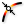 | Point On Curve (CurvePoint) Evaluates a curve at a specific location |
| Center (Cen) Find the center point and radius of arcs and circles. | |
| 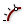 | Evaluate Length (Eval) Evaluate a curve at a certain factor along its length. Length factors can be supplied both in curve units and normalized units. Change the [N] parameter to toggle between the two modes. |
| Closed (Cls) Test if a curve is closed or periodic. | |
| Control Points (CP) Extract the nurbs control points and knots of a curve. | |
| Control Polygon (CPoly) Extract the nurbs control polygon of a curve. | |
| 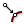 | Curve Closest Point (Crv CP) Find the closest point on a curve. |
| 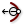 | Curvature Evaluate the curvature of a curve at a specified parameter. |
| 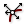 | Derivatives (CDiv) Evaluate the derivatives of a curve at a specified parameter. |
| 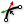 | Discontinuity (Disc) Find all discontinuities along a curve. |
| 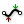 | Extremes (X-tremez) Find the extremes (highest and lowest points) on a curve. |
| 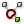 | Curve Nearest Object (CrvNear) Find the object nearest to a curve. |
| 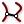 | Curve Proximity (CrvProx) Find the pair of closest points between two curves. |
| 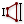 | Segment Lengths (LenSeg) Finds the shortest and longest segments of a curve. |
| 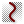 | Curve Side (Side) Find on which side of a curve a point exists |
| 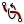 | Torsion Evaluate the torsion of a curve at a specified parameter. |
| Deconstruct Arc (DArc) Retrieve the base plane, radius and angle domain of an arc. | |
| 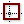 | Deconstuct Rectangle (DRec) Retrieve the base plane and side intervals of a rectangle. |
| 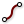 | End Points (End) Extract the end points of a curve. |
| 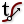 | Evaluate Curve (Eval) Evaluate a curve at the specified parameter. |
| 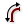 | Length (Len) Measure the length of a curve. |
| Length Domain (LenD) Measure the length of a curve subdomain. | |
| Length Parameter (LenP) Measure the length of a curve to and from a parameter. | |
| Planar Test a curve for planarity. | |
| 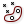 | Point In Curve (InCurve) Test a point for closed curve containment. |
| 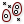 | Point in Curves (InCurves) Test a point for multiple closed curve containment. |
| 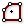 | Polygon Center (PCen) Find the center point (average) for a polyline. |
| 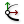 | Curve Frame (Frame) Get the curvature frame of a curve at a specified parameter. |
| 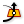 | Horizontal Frame (HFrame) Get a horizontally aligned frame along a curve at a specified parameter. |
| Perp Frame (PFrame) Solve the perpendicular (zero-twisting) frame at a specified curve parameter. |
Curve > Primitive
| Arc Create an arc defined by base plane, radius and angle domain. | |
| 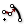 | Modified Arc (ModArc) Create an arc based on another arc. |
| 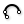 | Arc 3Pt (Arc) Create an arc through three points. |
| 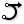 | Arc SED (Arc) Create an arc defined by start point, end point and a tangent vector. |
| 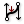 | BiArc Create a bi-arc based on endpoints and tangents. |
| Circle (Cir) Create a circle defined by base plane and radius. | |
| 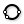 | Circle 3Pt (Circle) Create a circle defined by three points. |
| Circle CNR (Circle) Create a circle defined by center, normal and radius. | |
| Circle Fit (FCircle) Fit a circle to a collection of points. | |
| 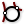 | Circle TanTan (CircleTT) Create a circle tangent to two curves. |
| 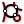 | Circle TanTanTan (CircleTTT) Create a circle tangent to three curves. |
| Ellipse Create an ellipse defined by base plane and two radii. | |
| 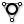 | InCircle Create the incircle of a triangle. |
| 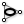 | InEllipse Create the inscribed ellipse (Steiner ellipse) of a triangle. |
| Line (Ln) Create a line between two points. | |
| 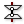 | Line 2Plane (Ln2Pl) Create a line between two planes. |
| 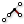 | Line 4Pt (Ln4Pt) Create a line from four points. |
| Fit Line (FLine) Fit a line to a collection of points. | |
| Line SDL (Line) Create a line segment defined by start point, tangent and length.} | |
| 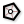 | Polygon Create a polygon with optional round edges. |
| Rectangle Create a rectangle on a plane | |
| Rectangle 2Pt (Rec 2Pt) Create a rectangle from a base plane and two points | |
| 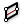 | Rectangle 3Pt (Rec 3Pt) Create a rectangle from three points |
| Tangent Arcs (TArc) Create tangent arcs between circles | |
| Tangent Lines (Tan) Create tangent lines between a point and a circle | |
| 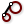 | Tangent Lines (Ex) (TanEx) Create external tangent lines between circles |
| 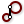 | Tangent Lines (In) (TanIn) Create internal tangent lines between circles |
Surface > Analysis
| Area Moments (AMoments) Solve area moments for breps, meshes and planar closed curves. | |
| Area Solve area properties for breps, meshes and planar closed curves. | |
| 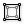 | Box Corners Extract all 8 corners of a box. |
| 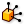 | Box Properties (BoxProp) Get some properties of a box |
| 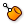 | Brep Closest Point (Brep CP) Find the closest point on a brep |
| Brep Edges (Edges) Extract the edge curves of a brep. | |
| Brep Topology (Topology) Get and display the topology of a brep. | |
| Point In Brep (BrepInc) Test whether a point is inside a closed brep | |
| 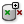 | Point In Breps (BrepsInc) Test whether a point is inside a collection of closed breps |
| Brep Wireframe (Wires) Extract the wireframe curves of a brep. | |
| Deconstruct Box (DeBox) Deconstruct a box into its constituent parts. | |
| Deconstruct Brep (DeBrep) Deconstruct a brep into its constituent parts. | |
| 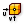 | Evaluate Box (Box) Evaluate a box in normalised {UVW} space. |
| 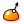 | Evaluate Surface (EvalSrf) Evaluate local surface properties at a {uv} coordinate. |
| Shape In Brep (ShapeIn) Tests whether a shape is inside a brep | |
| 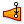 | Surface Closest Point (Srf CP) Find the closest point on a surface. |
| 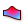 | Surface Curvature (Curvature) Evaluate the surface curvature at a {uv} coordinate. |
| Dimensions (Dim) Get the approximate dimensions of a surface | |
| Surface Inflection (SInf) Compute the inflection curves for a surface | |
| Is Planar (Planar) Test whether a surface is planar | |
| 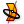 | Osculating Circles (Osc) Calculate the principal osculating circles of a surface at a {uv} coordinate. |
| 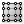 | Surface Points (SrfPt) Get the control-points of a Nurbs Surface |
| Principal Curvature (Curvature) Evaluate the principal curvature of a surface at a {uv} coordinate. | |
| 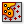 | Point In Trim (TrimInc) Test whether a {uv} coordinate is inside the trimmed portion of a surface |
| Volume Moments (VMoments) Solve volume properties for closed breps and meshes. | |
| Volume Solve volume properties for closed breps and meshes. |
Mesh > Util
| Exposure Solve mesh exposure for a collection of energy rays and obstructions. | |
| Occlusion (Occ) Solve occlusion for a collection of view rays and obstructions. | |
| Blur Mesh (MBlur) Blur the colours on a mesh | |
| Mesh Brep (Mesh) Create a mesh that approximates Brep geometry | |
| Simple Mesh (SMesh) Create a mesh that represents a Brep as simply as possible | |
| 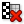 | Cull Faces (CullF) Cull faces from a mesh |
| 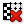 | Cull Vertices (CullV) Cull vertices from a mesh |
| 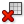 | Delete Faces (DeleteF) Delete faces from a mesh |
| Delete Vertices (DeleteV) Delete vertices from a mesh | |
| Mesh Join (MJoin) Join a set of meshes into a single mesh | |
| Quadrangulate (Quad) Quadrangulate as many triangles as possible in a mesh | |
| Settings (Custom) (Custom Mesh Settings) Represents custom mesh settings. | |
| Settings (Speed) (Jagged) Represents 'Jagged & faster' mesh settings. | |
| Settings (Quality) (Smooth) Represents 'Smooth & slower' mesh settings. | |
| Mesh Shadow (MShadow) Compute the shadow outline for a mesh object | |
| Disjoint Mesh (Disjoint) Split a mesh into disjoint pieces. | |
| Mesh Split Plane (MSplit) Split a mesh with an infinite plane. | |
| Mesh Surface (Mesh UV) Create a Surface UV mesh | |
| Triangulate (Tri) Triangulate all quads in a mesh | |
| Unweld Mesh (Unweld) Unweld (split) creases in a mesh | |
| Weld Mesh (Weld) Weld (merge) creases in a mesh | |
| Smooth Mesh (MSmooth) Smooth the vertices of a mesh |
Curve > Util
| Polyline Collapse (PCol) Collapse short segments in a polyline curve. | |
| Seam Adjust the seam of a closed curve. | |
| Curve To Polyline (ToPoly) Convert a curve to a polyline. | |
| Extend Curve (Ext) Extend a curve by a specified distance. | |
| Fillet Fillet the sharp corners of a curve. | |
| Fillet Distance (Fillet) Fillet the sharp corners of a curve by distance. | |
| Fillet Fillet a curve at a parameter. | |
| Fit Curve (Fit) Fit a curve along another curve. | |
| Flip Curve (Flip) Flip a curve using an optional guide curve. | |
| Join Curves (Join) Join as many curves as possible | |
| Offset Offset a curve with a specified distance. | |
| Offset Loose (Offset (L)) Offset the control-points of a curve with a specified distance. | |
| Offset Loose 3D (Offset (3D)) Offset the control-points of a curve with a specified distance in 3D. | |
| Offset on Srf (OffsetS) Offset a curve on a surface with a specified distance. | |
| Project Project a curve onto a Brep. | |
| Pull Curve (Pull) Pull a curve onto a surface. | |
| Rebuild Curve (ReB) Rebuild a curve with a specific number of control-points. | |
| Reduce (RedPLine) Reduce a polyline by removing least significant vertices. | |
| Simplify Curve (Simplify) Simplify a curve. | |
| Smooth Polyline (SmoothPLine) Smooth the vertices of a polyline curve. | |
| Offset Polyline (OP) Offset a 2D polyline | |
| Explode Explode a curve into smaller segments. |
Curve > Spline
| Bezier Span (BzSpan) Construct a bezier span from endpoints and tangents. | |
| Blend Curve (BlendC) Create a blend curve between two curves. | |
| Blend Curve Pt (BlendCPt) Create a blend curve between two curves that intersects a point. | |
| Catenary (Cat) Create a catenary chain between two points. | |
| Catenary Ex (CatEx) Create a variable catenary chain between two points. | |
| Connect Curves (Connect) Connect a sequence of curves. | |
| Nurbs Curve (Nurbs) Construct a nurbs curve from control points. | |
| Interpolate (IntCrv) Create an interpolated curve through a set of points. | |
| Curve On Surface (CrvSrf) Create an interpolated curve through a set of points on a surface. | |
| Interpolate (t) (IntCrv(t)) Create an interpolated curve through a set of points with tangents. | |
| Tangent Curve (TanCurve) Create a curve through a set of points with tangents. | |
| Iso Curve (Iso) Construct {uv} isocurves on a surface. | |
| Kinky Curve (KinkCrv) Construct an interpolated curve through a set of points with a kink angle threshold. | |
| Match Curve (MatchCrv) Match two curves. | |
| NurbsCurve (NurbCrv) Construct a nurbs curve from control points, weights and knots. | |
| Knot Vector (Knots) Construct a nurbs curve knot vector. | |
| PolyArc (PArc) Create a polycurve consisting of arc and line segments. | |
| PolyLine (PLine) Create a polyline connecting a number of points. | |
| Geodesic Construct a surface geodesic between two points. | |
| Sub Curve (SubCrv) Construct a curve from the sub-domain of a base curve. | |
| Swing Arc (Swing) Create a polycurve consisting of arcs defined by center points. | |
| Tween Curve (TweenCrv) Tween between two curves. |
Surface > Freeform
| 4Point Surface (Srf4Pt) Create a surface connecting three or four corner points. | |
| Boundary Surfaces (Boundary) Create planar surfaces from a collection of boundary edge curves. | |
| Edge Surface (EdgeSrf) Create a surface from two, three or four edge curves. | |
| Extrude (Extr) Extrude curves and surfaces along a vector. | |
| Extrude Along (ExtrCrv) Extrude curves and surfaces along a curve. | |
| Extrude Linear (Extrude) Extrude curves and surfaces along a straight path. | |
| Extrude Point (Extr) Extrude curves and surfaces to a point. | |
| Fragment Patch (FPatch) Create a fragmented patch from a polyline boundary | |
| Loft Options (Loft Opt) Create loft options from atomic inputs | |
| Loft Create a lofted surface through a set of section curves. | |
| Network Surface (NetSurf) Create a surface from curve networks | |
| Patch Create a patch surface | |
| Pipe Create a pipe surface around a rail curve. | |
| Pipe Variable (VPipe) Create a pipe surface with variable radii around a rail curve. | |
| Surface From Points (SrfGrid) Create a nurbs surface from a grid of points. | |
| Rail Revolution (RailRev) Create a surface of revolution using a sweep rail. | |
| Revolution (RevSrf) Create a surface of revolution. | |
| Ruled Surface (RuleSrf) Create a surface between two curves. | |
| Sum Surface (SumSrf) Create a sum surface from two edge curves. | |
| Sweep1 (Swp1) Create a sweep surface with one rail curve. | |
| Sweep2 (Swp2) Create a sweep surface with two rail curves. |
Sets > List
| Combine Data (Combine) Combine non-null items out of several inputs | |
| Dispatch Dispatch the items in a list into two target lists. | |
| Insert Items (Ins) Insert a collection of items into a list. | |
| Null Item (Null) Test a data item for null or invalidity | |
| Item Index (Index) Retrieve the index of a certain item in a list. | |
| List Item (Item) Retrieve a specific item from a list. | |
| List Length (Lng) Measure the length of a list. | |
| Cross Reference (CrossRef) Cross Reference data from multiple lists | |
| Longest List (Long) Grow a collection of lists to the longest length amongst them | |
| Shortest List (Short) Shrink a collection of lists to the shortest length amongst them | |
| Partition List (Partition) Partition a list into sub-lists | |
| Pick'n'Choose (P'n'C) Pick and choose from a set of input data. | |
| Replace Items (Replace) Replace certain items in a list. | |
| Replace Nulls (NullRep) Replace nulls or invalid data with other data | |
| Reverse List (Rev) Reverse the order of a list. | |
| Shift List (Shift) Offset all items in a list. | |
| Sift Pattern (Sift) Sift elements in a list using a repeating index pattern. | |
| Sort List (Sort) Sort a list of numeric keys. | |
| Split List (Split) Split a list into separate parts. | |
| Sub List (SubSet) Extract a subset from a list. | |
| Weave Weave a set of input data using a custom pattern. |
Geometry
| Arc parameter Represents a collection of Circular Arc primitives. Arcs are stored as parametric (non-nurbs) curves internally and can thus not be linked to arc-like curve objects in the Rhino model since arcs in Rhino are not guaranteed to remain arcs; both linear transforms and morphs might turn them into elliptical arcs or nurbs curves. | |
| Vector parameter Represents a collection of 3D Vectors. Vectors are interchangeable with Points, but for purposes of clarity they have their own parameter type. | |
| Mesh parameter Represents a collection of Mesh geometry. Meshes in Rhino consist solely of triangles and quads. Meshes always contain a vertex array, a normal array (one for each vertex) and a face array. Meshes can optionally contain vertex texture coordinates and colours as well. | |
| Transform parameter Represents a collection of three-dimensional linear transforms. Transforms can consist of both affine transformations such as translation and rotations and non-affine transformations such as shearing and tapering. | |
| Field Contains a collection of vector fields | |
| Plane parameter Represents a collection of Plane primitives. Planes are defined by an origin point and three axis vectors. They represent local coordinate-systems which are often used in transformation operations. | |
| Twisted Box Parameter Represents a list of twisted boxes. Twisted boxes are primarily used in deformation (morph) components where they define non-euclidean spaces. | |
| Line parameter Represents a collection of Line primitives. Lines are stored as parametric (non-nurbs) curves internally and can thus not be linked to linear curve objects in the Rhino model since lines in Rhino are not guaranteed to remain lines. | |
| Brep parameter Represents a collection of Brep geometry. Brep stands for 'Boundary REPresentation' and all surfaces and polysurfaces in Rhino are Breps. If a Brep has only one face, it is considered a surface in Grasshopper. | |
| Rectangle parameter Represents a collection of Rectangle primitives. Rectangles are stored as parametric (non-nurbs) curves internally and can thus not be linked to rectangular curve objects in the Rhino model since rectangles in Rhino are not guaranteed to remain rectangles; both linear transforms and morphs might turn them into parallelograms or nurbs curves. | |
| Geometry parameter Represents a collection of 3D Geometry. Since new types of geometry are continually added, the preview and conversion algorithms of this parameter may be incomplete as it fails to recognize some data types that could -in a perfect world- have been treated like regular geometry. | |
| Group parameter Represents a collection of grouped geometry. | |
| Geometry Pipeline Defines a geometry pipeline from Rhino to Grasshopper | |
| Box parameter Represents a collection of oriented Box geometry. Box parameters are capable of storing persistent data. You can set the persistent records through the parameter menu. | |
| Circle parameter Represents a collection of Circle primitives. Circles are stored as parametric (non-nurbs) curves internally and can thus not be linked to circular curve objects in the Rhino model since circles in Rhino are not guaranteed to remain circles; both linear transforms and morphs might turn them into ellipses or nurbs curves. | |
| Curve parameter Represents a collection of Curve geometry. Curve geometry is the common denominator of all curve types in Grasshopper. | |
| Surface parameter Represents a collection of Surface geometry. Surface geometry is the common denominator of all surface types in Grasshopper. | |
| Mesh face parameter Represents a collection of 3D mesh faces. Mesh face parameters are a utility type that is used for mesh components. It exposes almost no user control. | |
| Geometry Cache Bake or Load geometry to and from the Rhino document | |
| Point parameter Represents a collection of 3D Point coordinates. |
Util
| Maximum Return the greater of two items. | |
| Minimum Return the lesser of two items. | |
| Smooth Numbers Smooth out changing numbers over time | |
| Cherry Picker Pick a single item from a data tree | |
| Gene Pool Contains a collection of genes (i.e. variables) | |
| Data Recorder Records data over time | |
| Cluster Input Represents a cluster input parameter | |
| Timer Object Timers are object which fire update events at specified intervals. This process is reasonably dangerous since updates might occur when you do not expect them, so please be careful when using them, and only use a timer when you have no other option. | |
| Data Dam Delay data on its way through the document | |
| Param Viewer As of Grasshopper 0.6, data can be stored in hierarchical structures not dissimilar to a branching tree. Data is still stored in lists, but each list now has a 'path', which is a series of indices that describe the position of the data branch inside the tree. | |
| Scribble A quick note | |
| Jump Jump between different locations | |
| Cluster Output Represents a cluster output parameter | |
| Galapagos Interface with Galapagos evolutionary solver | |
| Merge Group Merge two groups | |
| Group Group a set of objects | |
| Transform Matrix A 4x4 Transformation matrix | |
| Ungroup Ungroup a set of objects | |
| Split Group Split a group |
Maths > Operators
| Series Addition (SA) Perform serial addition until a goal has been reached | |
| Equality (Equals) Test for (in)equality of two numbers | |
| Larger Than (Larger) Larger than (or equal to) | |
| Mass Addition (MA) Perform mass addition of a list of items | |
| Mass Multiplication (MM) Perform mass multiplication of a list of numbers | |
| Relative Differences (RelDif) Compute relative differences for a list of data | |
| Similarity (Similar) Test for similarity of two numbers | |
| Smaller Than (Smaller) Smaller than (or equal to) | |
| Integer Division (A\B) Mathematical integer division | |
| Factorial (Fac) Returns the factorial of an integer. | |
| Gate And (And) Perform boolean conjunction (AND gate). | |
| Gate Majority (Vote) Calculates the majority vote among three booleans. | |
| Gate Nand (Nand) Perform boolean alternative denial (NAND gate). | |
| Gate Nor (Nor) Perform boolean joint denial (NOR gate). | |
| Gate Not (Not) Perform boolean negation (NOT gate). | |
| Gate Or (Or) Perform boolean disjunction (OR gate). | |
| Gate Xnor (Xnor) Perform boolean biconditional (XNOR gate). | |
| Gate Xor (Xor) Perform boolean exclusive disjunction (XOR gate). |
Vector > Plane
| Plane Coordinates (PlCoord) Get the coordinates of a point in a plane axis system. | |
| Adjust Plane (PAdjust) Adjust a plane to match a new normal direction | |
| Align Plane (Align) Perform minimal rotation to align a plane with a guide vector | |
| Align Planes (Align) Align planes by minimizing their serial rotation. | |
| Construct Plane (Pl) Construct a plane from an origin point and {x}, {y} axes. | |
| Deconstruct Plane (DePlane) Deconstruct a plane into its component parts. | |
| Plane 3Pt (Pl 3Pt) Create a plane through three points. | |
| Plane Closest Point (CP) Find the closest point on a plane. | |
| Plane Fit (PlFit) Fit a plane through a set of points. | |
| Line + Line (LnLn) Create a plane from two line segments. | |
| Line + Pt (LnPt) Create a plane from a line and a point. | |
| Plane Normal (Pl) Create a plane perpendicular to a vector. | |
| Plane Offset (Pl Offset) Offset a plane. | |
| Plane Origin (Pl Origin) Change the origin point of a plane | |
| Rotate Plane (PRot) Perform plane rotation around plane z-axis | |
| XY Plane (XY) World XY plane. | |
| XZ Plane (XZ) World XZ plane. | |
| YZ Plane (YZ) World YZ plane. |
Vector > Vector
| Vector XYZ (Vec) Create a vector from {xyz} components. | |
| Deconstruct Vector (DeVec) Deconstruct a vector into its component parts. | |
| Unit Vector (Unit) Unitize vector. | |
| Unit X (X) Unit vector parallel to the world {x} axis. | |
| Unit Y (Y) Unit vector parallel to the world {y} axis. | |
| Unit Z (Z) Unit vector parallel to the world {z} axis. | |
| Vector 2Pt (Vec2Pt) Create a vector between two points. | |
| Amplitude (Amp) Set the amplitude (length) of a vector. | |
| Angle Compute the angle between two vectors. | |
| Cross Product (XProd) Compute vector cross product. | |
| Divide (VDiv) Perform vector-scalar division. | |
| Dot Product (DProd) Compute vector dot product. | |
| Vector Length (VLen) Compute the length (amplitude) of a vector. | |
| Multiply (VMul) Perform vector-scalar multiplication. | |
| Reverse (Rev) Reverse a vector (multiply by -1). | |
| Rotate (VRot) Rotate a vector around an axis. | |
| Addition (VAdd) Perform vector-vector addition. | |
| Solar Incidence (Solar) Gets the solar incidence vector for a certain time and place |
Vector > Point
| Project Point (Project) Project a point onto a collection of shapes | |
| Closest Point (CP) Find closest point in a point collection. | |
| Closest Points (CPs) Find closest points in a point collection. | |
| Construct Point (Pt) Construct a point from {xyz} coordinates. | |
| Cull Duplicates (CullPt) Cull points that are coincident within tolerance | |
| Deconstruct (pDecon) Deconstruct a point into its component parts. | |
| Distance (Dist) Compute Euclidean distance between two point coordinates. | |
| Numbers to Points (Pt2Num) Convert a list of numbers to a list of points | |
| Barycentric (BCentric) Create a point from barycentric {u,v,w} coordinates | |
| Point Cylindrical (Pt) Create a point from cylindrical {angle,radius,elevation} coordinates. | |
| Point Groups (PGroups) Create groups from nearby points | |
| Point Oriented (Pt) Create a point from plane {u,v,w} coordinates. | |
| Point Polar (Pt) Create a point from polar {phi,theta,offset} coordinates. | |
| To Polar (Polar) Convert a 3D point to plane polar coordinates. | |
| Points to Numbers (Pt2Num) Convert a list of points to a list of numbers | |
| Pull Point (Pull) Pull a point to a variety of geometry. | |
| Sort Points (Sort Pt) Sort points by Euclidean coordinates (first x, then y, then z) | |
| Sort Along Curve (AlongCrv) Sort points along a curve |
Primitive
| Mesh Sweep Create a mesh sweep with one rail curve. | |
| Mesh Pipe Create a mesh pipe. | |
| File Path Contains a collection of file paths | |
| Domain parameter Represents a collection of one-dimensional Domains. Domains are typically used to represent curve fragments and continuous numeric ranges. | |
| Colour parameter Represents a collection of colour values. Colour parameters are capable of storing persistent data. You can set the persistent records through the parameter menu. | |
| Shader parameter Represents a collection of Shader (shading material) values. Shaders are used during real-time and render-time display of geometry. The Grasshopper shader is based on the Rhino basic material which supports a number of settings most of which can be viewed real-time in the viewport. | |
| Integer parameter Represents a collection of Integer numeric values. Integer parameters are capable of storing persistent data. You can set the persistent records through the parameter menu. | |
| Double parameter Represents a collection of double-precision floating point values (it has got nothing to do with two of anything). Double parameters are capable of storing persistent data. You can set the persistent records through the parameter menu. | |
| Text parameter Represents a collection of Text fragments. String parameters are capable of storing persistent data. You can set the persistent records through the parameter menu. | |
| Complex parameter Represents a collection of complex numbers. Complex parameters are capable of storing persistent data. You can set the persistent records through the parameter menu. | |
| Path parameter Represents a collection of Data Tree branch paths. Grasshopper stores data in hierarchical lists not dissimilar to a branching tree structure. Every branch in the data tree is defined by a series of index integers. | |
| Culture Contains a collection of culture specifiers | |
| Time parameter Represents a collection of Time and Date values. Time parameters are capable of storing persistent data. You can set the persistent records through the parameter menu. | |
| Object parameter Represents a collection of... well, anything really. This parameter type will happily eat whatever you decide to feed it. As a result, the preview of this parameter may be incomplete as it might fail to recognize some data types that could -under ideal circumstances- have been displayed in the viewport. | |
| Domain² parameter Contains a collection of two-dimensional domains. 2D Domains are typically used to represent surface fragments. A two-dimensional domain consists of two one-dimensional domains. | |
| Matrix Contains a collection of numeric matrices | |
| Boolean parameter Represents a collection of Boolean (True/False) values. Boolean parameters are capable of storing persistent data. You can set the persistent records through the parameter menu. | |
| Guid parameter Represents a collection of Guids. Guid parameters are capable of storing persistent data. You can set the persistent records through the parameter menu. |
Input
| Value List Provides a list of preset values to choose from | |
| Boolean Toggle Boolean (true/false) toggle | |
| MD Slider A multidimensional slider | |
| Colour Picker Provides a colour picker object | |
| Digit Scroller A scroller is a special interface object that allows for quick setting of individual numeric values. You can change the values by dragging the digits up or down, by dragging the radix point left and right, by clicking on the sign symbol or by double clicking and entering a numeric expression. Note that scroller only have output grips. | |
| Colour Wheel Creates a palette of related colours | |
| Number slider A slider is a special interface object that allows for quick setting of individual numeric values. You can change the values and properties through the menu, or by double-clicking a slider object. Sliders can be made longer or shorter by dragging the rightmost edge left or right. Note that sliders only have output grips. | |
| Text Panel A Panel is like a Post-It™ sticker. It is typically an inactive object that allows you to add little remarks or explanations to a Document. You can change the text through the menu or by double-clicking the panel surface. | |
| Read File Read the contents of a file | |
| Gradient Control Gradient controls allow you to define a colour gradient within a numeric domain. By default the unit domain (0.0 ~ 1.0) is used, but this can be adjusted via the L0 and L1 input parameters. | |
| Colour swatch A swatch is a special interface object that allows for quick setting of individual colour values. You can change the colour of a swatch through the context menu. | |
| Button Button object with two values | |
| Calendar Represents a calendar | |
| Graph mapper Graph mapper objects allow you to remap a set of numbers. By default the {x} and {y} domains of a graph function are unit domains (0.0 ~ 1.0), but these can be adjusted via the Graph Editor. Graph mappers can contain a single mapping function which can be picked through the context menu. Graphs typically have grips (little circles) which can be used to modify the variables that define the graph equation. | |
| Control Knob A radial dial knob for settings numbers | |
| Image sampler The image sampler object allows you to evaluate pixel data stored in image files. You can instantiate an Image Sampler simply by dragging an image file from Windows Explorer onto a Grasshopper canvas. If you want to change the referenced file path, you can do so via the menu or the Image Sampler Settings dialog. The Image Sampler object has several options that pertain to the sampling algorithm, they can all be set via the context menu or the aforementioned Settings dialog: | |
| Clock Represents a 24 hour clock |
Tree
| Clean Tree Removed all null and invalid items from a data tree. | |
| Trim Tree Reduce the complexity of a tree by merging the outermost branches. | |
| Simplify Tree Simplify a tree by removing the overlap shared amongst all branches. Imagine a tree with six branches: | |
| Path Compare Compare a path to a mask pattern | |
| Shift Paths Shift the indices in all data tree paths | |
| Flip Matrix Flip a matrix-like data tree by swapping rows and columns. | |
| Match Tree Match one data tree with another. | |
| Stream Gate Redirects a stream into specific outputs. This component acts like a railroad switch, the input is allowed to flow to only a single output parameter. You cannot change the names of the output parameters since they represent the gate index value. | |
| Explode Tree Extract all the branches from a tree | |
| Graft Tree Typically, data items are stored in branches at specific index values (0 for the first item, 1 for the second item, and so on and so forth) and branches are stored in trees at specific branch paths, for example: {0;1}, which indicates the second sub-branch of the first main branch. | |
| Unflatten Tree Unflatten a data tree by moving items back into branches. | |
| Replace Paths Find & replace paths in a data tree. This component support Path Masks, which are lines of text that represent allowed and disallowed path indices. Masks can support both single digits, digit ranges, digits groups and wildcards. Masks consists of alternating index qualifiers and index separators. Separators must be commas or semi-colons. | |
| Split Tree Split a data tree into two parts using path masks. | |
| Stream Filter Filters a collection of input streams This component acts like a railroad switch, only one of the input streams is allowed to flow to the output parameter. You cannot change the names of the input parameters since they represent the filter index value. | |
| Flatten Tree Flatten a data tree by removing all branching information. | |
| Path Mapper Perform lexical operations on data trees. Lexical operations are logical mappings between data paths and indices which are defined by textual (lexical) masks and patterns. For example, you could define a lexical rule like "Take the original path but ignore the last index" using the English language. This would be very readable to human beings, but not so for computers. Since we're the intelligent ones, it's only fair that we adapt. | |
| Prune Tree Removes all branches from a Tree that carry a special number of Data items. You can supply both a lower and an upper limit for branch pruning. |
Intersect > Mathematical
| Curve | Line (CLX) Solve intersection events for a curve and a line. | |
| Curve | Plane (PCX) Solve intersection events for a curve and a plane. | |
| Line | Line (LLX) Solve intersection events for two lines. | |
| Line | Plane (PLX) Solve intersection event for a line and a plane. | |
| Brep | Line (BLX) Solve intersection events for a Brep and a line. | |
| Brep | Plane (Sec) Solve intersection events for a Brep and a plane (otherwise known as section). | |
| Contour Create a set of Brep or Mesh contours | |
| Contour (ex) (Contour) Create a set of Brep or Mesh contours | |
| Mesh | Ray (MeshRay) Intersect a mesh with a semi-infinite ray | |
| Mesh | Plane (Sec) Solve intersection events for a Mesh and a Plane (otherwise known as section). | |
| Surface | Line (SLX) Solve intersection events for a surface and a line. | |
| IsoVist (IVist) Compute an isovist sampling at a location | |
| IsoVist Ray (IVRay) Compute a single isovist sample at a location | |
| Plane | Plane | Plane (3PX) Solve the intersection events of three planes. | |
| Plane | Plane (PPX) Solve the intersection event of two planes. | |
| Plane Region (PlReg) Create a bounded region from intersecting planes. |
Mathematics
| Merge 10 (M10) Merge ten streams into one. | |
| Merge Merge two streams into one. | |
| Merge 03 (M3) Merge three streams into one. | |
| Merge 04 (M4) Merge four streams into one. | |
| Merge 05 (M5) Merge five streams into one. | |
| Merge 06 (M6) Merge six streams into one. | |
| Merge 08 (M8) Merge eight streams into one. | |
| F4 (F(a,b,c,d)) A function of four variables; {a,b,c,d}. | |
| F8 (F(a,b,c,d,w,x,y,z)) A function of eight variables; {a,b,c,d,w,x,y,z}. | |
| F5 (F(a,b,c,d,x)) A function of five variables; {a,b,c,d,x}. | |
| F6 (F(a,b,c,d,x,y)) A function of six variables; {a,b,c,d,x,y}. | |
| F7 (F(a,b,c,d,x,y,z)) A function of seven variables; {a,b,c,d,x,y,z}. | |
| F1 (F(x)) A function of a single variable; {x}. | |
| F2 (F(x,y)) A function of two variables; {x,y} | |
| F3 (F(x,y,z)) A function of three variables; {x,y,z}. |
Maths > Util
| Interpolate data (Interp) Interpolate a collection of data. | |
| Average (Avr) Solve the arithmetic average for a set of items | |
| Extremes (Extrz) Find the extremes in a list of values | |
| Truncate (Trunc) Perform truncation of numerical extremes | |
| Weighted Average (Wav) Solve the arithmetic weighted average for a set of items | |
| Round Round a floating point value. | |
| Natural logarithm (E) Returns a factor of the natural number (e). | |
| Epsilon (Eps) Returns a factor of double precision floating point epsilon. | |
| Golden Ratio (Phi) Returns a factor of the golden ratio (Phi). | |
| Pi Returns a factor of Pi. | |
| Complex Argument (Arg) Get the argument of a Complex number | |
| Complex Components (Complex) Extract the Real and Imaginary components from a complex number | |
| Complex Conjugate (z*) Create the conjugate of a Complex number | |
| Complex Modulus (CMod) Get the modulus of a Complex number | |
| Create Complex (Complex) Create a complex number from a Real and an Imaginary component |
Intersect > Shape
| Solid Difference (SDiff) Perform a solid difference on two Brep sets. | |
| Solid Intersection (SInt) Perform a solid intersection on two Brep sets. | |
| Split Brep (Split) Split one brep with another. | |
| Trim Solid (Trim) Cut holes into a shape with a set of solid cutters. | |
| Solid Union (SUnion) Perform a solid union on a set of Breps. | |
| Box Slits (Slits) Add slits to a collection of intersecting boxes | |
| Boundary Volume (BVol) Create a closed polysurface from boundary surfaces | |
| Region Difference (RDiff) Difference between two sets of planar closed curves (regions) | |
| Region Intersection (RInt) Intersection between two sets of planar closed curves (regions) | |
| Region Union (RUnion) Union of a set of planar closed curves (regions) | |
| Region Slits (RSlits) Add slits to a collection of intersecting planar regions | |
| Mesh Difference (MDif) Perform a solid difference on two sets of meshes | |
| Mesh Intersection (MInt) Perform a solid intersection on a set of meshes | |
| Mesh Union (MUnion) Perform a solid union on a set of meshes | |
| Mesh Split (MSplit) Mesh Mesh split |
Maths > Domain
| Construct Domain\x00b2 (Dom\x00b2) Create a two-dimensional domain from two simple domains. | |
| Construct Domain\x00b2 (Dom\x00b2Num) Create a two-dimensinal domain from four numbers. | |
| Construct Domain (Dom) Create a numeric domain from two numeric extremes. | |
| Deconstruct Domain\x00b2 (DeDom2) Deconstruct a two-dimensional domain into its component parts | |
| Deconstruct Domain\x00b2 (DeDom2Num) Deconstruct a two-dimensional domain into four numbers | |
| Deconstruct Domain (DeDomain) Deconstruct a numeric domain into its component parts. | |
| Divide Domain\x00b2 (Divide) Divides a two-dimensional domain into equal segments. | |
| Divide Domain (Div) Divide a domain into equal segments. | |
| Find Domain (FDom) Find the first domain that contains a specific value | |
| Includes (Inc) Test a numeric value to see if it is included in the domain | |
| Consecutive Domains (Consec) Create consecutive domains from a list of numbers | |
| Bounds (Bnd) Create a numeric domain which encompasses a list of numbers. | |
| Bounds 2D (Bnd) Create a numeric two-dimensional domain which encompasses a list of coordinates. | |
| Remap Numbers (ReMap) Remap numbers into a new numeric domain |
Sets > Sequence
| Sequence (Seq) Create a sequence of textual characters. | |
| Fibonacci (Fib) Creates a Fibonacci sequence. | |
| Jitter Randomly shuffles a list of values. | |
| Random Generate a list of pseudo random numbers. | |
| Range Create a range of numbers. | |
| Series Create a series of numbers. | |
| Cull Index (Cull i) Cull (remove) indexed elements from a list. | |
| Cull Nth (CullN) Cull (remove) every Nth element in a list. | |
| Cull Pattern (Cull) Cull (remove) elements in a list using a repeating bit mask. | |
| Duplicate Data (Dup) Duplicate data a predefined number of times. | |
| Random Reduce (Reduce) Randomly remove N items from a list | |
| Repeat Data (Repeat) Repeat a pattern until it reaches a certain length. | |
| Stack Data (Stack) Duplicate individual items in a list of data | |
| RandomEx (RndEx) Generate random data between extremes. |
Trig
| Tangent Compute the tangent of a value | |
| CoTangent Compute the co-tangent (reciprocal of the Tangent) of an angle. | |
| Circumcentre Generate the triangle circumcentre from perpendicular bisectors. | |
| Orthocentre Generate the triangle orthocentre from altitudes. | |
| ArcCosine Compute the angle whose cosine is the specified value. | |
| Secant Compute the secant (reciprocal of the Cosine) of an angle. | |
| Sine Compute the sine of a value | |
| Sinc Compute the sinc (Sinus Cardinalis) of a value. | |
| Centroid Generate the triangle centroid from medians. | |
| ArcTangent Compute the angle whose tangent is the specified value. | |
| Incentre Generate the triangle incentre from angle bisectors. | |
| ArcSine Compute the angle whose sine is the specified value. | |
| CoSecant Compute the co-secant (reciprocal of the Sine) of an angle. | |
| Cosine Compute the cosine of a value |
Sets > Sets
| Create Set (CSet) Creates the valid set from a list of items (a valid set only contains distinct elements). | |
| Find similar member (FSim) Find the most similar member in a set. | |
| Disjoint Test whether two sets are disjoint. | |
| SubSet Test two sets for inclusion. | |
| Key/Value Search (KeySearch) Extract an item from a collection using a key-value match | |
| Delete Consecutive (DCon) Delete consecutive similar members in a set. | |
| Replace Members (Replace) Replace members in a set. | |
| Carthesian Product (CProd) Create the Carthesian product for two sets of identical cardinality. | |
| Set Difference (Difference) Create the difference of two sets (the collection of objects present in A but not in B). | |
| Set Intersection (Intersection) Creates the intersection of two sets (the collection of unique objects present in both sets). | |
| Member Index (MIndex) Find the occurences of a specific member in a set. | |
| Set Difference (S) (ExDiff) Create the symmetric difference of two sets (the collection of objects present in A or B but not both). | |
| Set Majority (Majority) Determine majority member presence amongst three sets. | |
| Set Union (SUnion) Creates the union of two sets (the collection of unique objects present in either set). |
Mesh > Triangulation
| Delaunay Edges (Con) Delaunay connectivity | |
| Convex Hull (Hull) Compute the planar, convex hull for a collection of points | |
| Delaunay Mesh (Del) Delaunay triangulation | |
| Facet Dome (Facet) Create a facetted dome | |
| OcTree (OcT) A three-dimensional oc-tree structure | |
| Voronoi Planar voronoi diagram for a collection of points | |
| Proximity 2D (Prox) Search for two-dimensional proximity within a point list | |
| Proximity 3D (Prox) Search for three-dimensional proximity within a point list | |
| QuadTree (QT) A two-dimensional quadtree structure | |
| Voronoi Groups (VorGroup) Compute a custom set of nested voronoi diagrams. | |
| Substrate Substrate algorithm inspired by Jared Tarbell (Complexification.net) | |
| Voronoi 3D (Voronoi\x00b3) Volumetric voronoi diagram for a collection of points | |
| Voronoi Cell (VCell) Compute a single 3D Voronoi cell |
Surface > Util
| Brep Join (Join) Join a number of Breps together | |
| Cap Holes Ex (CapEx) Cap as many holes as possible in a Brep. | |
| Cap Holes (Cap) Cap all planar holes in a Brep. | |
| Copy Trim (Trim) Copy UV trim data from one surface to another. | |
| Flip Flip the normals of a surface based on local or remote geometry | |
| Isotrim (SubSrf) Extract an isoparametric subset of a surface. | |
| Merge Faces (FMerge) Merge all adjacent co-planar faces in a brep | |
| Offset Offset a surface by a fixed amount. | |
| Offset Loose (Offset) Offset a surface by moving the control points. | |
| Retrim Retrim a surface based on 3D trim data from another surface. | |
| Untrim Remove all trim curves from a surface. | |
| Divide Surface (SDivide) Generate a grid of {uv} points on a surface. | |
| Surface Frames (SFrames) Generate a grid of {uv} frames on a surface |
Sets > Text
| Text Case (Case) Change the CaSiNg of a piece of text | |
| Concatenate (Concat) Concatenate some fragments of text | |
| Format Format some data using placeholders and formatting tags | |
| Text Fragment (Fragment) Extract a fragment (subset) of some text | |
| Replace Text (Rep) Replace all occurences of a specific text fragment with another | |
| Sort Text (TSort) Sort a collection of text fragments | |
| Text Distance (TDist) Compute the Levenshtein distance between two fragments of text. | |
| Text Join (Join) Join a collection of text fragments into one | |
| Text Length (Len) Get the length (character count) of some text | |
| Match Text (TMatch) Match a text against a pattern | |
| Text Split (Split) Split some text into fragments using separators | |
| Characters (Chars) Break text into individual characters | |
| Text Trim (Trim) Remove whitespace characters from the start and end of some text. |
Transform > Morph
| Map to Surface (Map Srf) Map a curve onto a surface via control points. | |
| Bend Deform (Bend) Deform a shape by bending it | |
| Box Morph (Morph) Morph an object into a twisted box. | |
| Point Deform (PDeform) Deform a shape by moving control-points individually | |
| Blend Box (BlendBox) Create a twisted box between two surfaces. | |
| Surface Box (SBox) Create a twisted box on a surface patch. | |
| Twisted Box (TBox) Create a twisted box from corner points. | |
| Mirror Curve (Mirror) Mirror a shape in a freeform curve. | |
| Mirror Surface (Mirror) Mirror geometry in a freeform surface. | |
| Surface Morph (SrfMorph) Morph geometry into surface UVW coordinates | |
| Spatial Deform (Deform) Perform spatial deformation based on custom space syntax. | |
| Spatial Deform (custom) (Deform) Perform spatial deformation based on custom space syntax. | |
| Camera Obscura (CO) Camera Obscura (point mirror) transformation. |
Surface > Primitive
| Bounding Box (BBox) Solve oriented geometry bounding boxes. | |
| Box 2Pt (Box) Create a box defined by two points. | |
| Box Rectangle (BoxRec) Create a box defined by a rectangle and a height. | |
| Center Box (Box) Create a box centered on a plane. | |
| Cone Create a conical surface | |
| Cylinder (Cyl) Create a cylindrical surface. | |
| Domain Box (Box) Create a box defined by a base plane and size domains. | |
| Plane Surface (PlaneSrf) Create a plane surface | |
| Plane Through Shape (PxS) Make a rectangular surface that is larger than a given shape. | |
| Sphere (Sph) Create a spherical surface. | |
| Sphere 4Pt (Sph4Pt) Create a spherical surface from 4 points. | |
| Sphere Fit (SFit) Fit a sphere to a 3D collection of points |
Curve > Division
| Dash Pattern (Dash) Convert a curve to a dash pattern. | |
| Shatter Shatter a curve into segments. | |
| Contour Create a set of Curve contours | |
| Contour (ex) (Contour) Create a set of Curve contours | |
| Curve Frames (Frames) Generate a number of equally spaced curve frames. | |
| Horizontal Frames (HFrames) Generate a number of equally spaced, horizontally aligned curve frames. | |
| Perp Frames (PFrames) Generate a number of equally spaced, perpendicular frames along a curve. | |
| Divide Curve (Divide) Divide a curve into equal length segments | |
| Divide By Deviation (DivideDev) Divide a curve into segments with equal deviation | |
| Divide Distance (DivDist) Divide a curve with a preset distance between points | |
| Divide Length (DivLength) Divide a curve into segments with a preset length |
Intersect > Physical
| Curve | Curve (CCX) Solve intersection events for two curves. | |
| Curve | Self (CX) Solve all self intersection events for a curve. | |
| Multiple Curves (MCX) Solve intersection events for multiple curves. | |
| Brep | Curve (BCX) Solve intersection events for a Brep and a curve. | |
| Brep | Brep (BBX) Solve intersection events for two Breps. | |
| Surface | Curve (SCX) Solve intersection events for a surface and a curve. | |
| Surface Split (SrfSplit) Split a surface with a bunch of curves. | |
| Mesh | Curve (MCX) Mesh Curve intersection | |
| Mesh | Mesh (MMX) Mesh Mesh intersection | |
| Collision Many|Many (ColMM) Test for many|many collision between objects | |
| Collision One|Many (ColOM) Test for one|many collision between objects |
Display > Colour
| Spectral (Spec) Spectral test | |
| Colour CMYK (CMYK) Create a colour from floating point {CMYK} channels. | |
| Colour HSL (HSL) Create a colour from floating point {HSL} channels. | |
| Colour L*ab (L*AB) Create a colour from floating point {CIE L*ab} channels. | |
| Colour LCH (LCH) Create a colour from floating point {CIE LCH} channels. | |
| Colour RGB (RGB) Create a colour from {RGB} channels. | |
| Colour RGB (f) (fRGB) Create a colour from floating point {RGB} channels. | |
| Split AHSV (AHSV) Split a colour into floating point {AHSV} channels | |
| Split ARGB (ARGB) Split a colour into floating point {ARGB} channels. | |
| Colour XYZ (XYZ) Create a colour from floating point {XYZ} channels (CIE 1931 spec). |
Transform > Affine
| Box Mapping (BoxMap) Transform geometry from one box into another. | |
| Orient Direction (Orient) Orient an object using directional constraints only. | |
| Project Project an object onto a plane. | |
| Project Along (ProjectA) Project an object onto a plane along a direction. | |
| Rectangle Mapping (RecMap) Transform geometry from one rectangle into another. | |
| Scale Scale an object uniformly in all directions. | |
| Scale NU Scale an object with non-uniform factors. | |
| Shear Angle (Shear) Shear an object based on tilt angles. | |
| Shear Shear an object based on a shearing vector. | |
| Triangle Mapping (TriMap) Transform geometry from one triangle into another. |
Sets > Tree
| Entwine Flatten and combine a collection of data streams | |
| Merge Multiple (Merge) Merge multiple input streams into one | |
| Merge Merge a bunch of data streams | |
| Construct Path (Path) Construct a data tree branch path. | |
| Deconstruct Path (DPath) Deconstruct a data tree path into individual integers. | |
| Relative Item (RelItem) Retrieve a relative item combo from a data tree | |
| Relative Items (RelItem2) Retrieve a relative item combo from two data trees | |
| Tree Branch (Branch) Retrieve a specific branch from a data tree. | |
| Tree Item (Item) Retrieve a specific item from a data tree. | |
| Tree Statistics (TStat) Get some statistics regarding a data tree. |
Transform > Euclidean
| Sanity XForm (MWHAHAHA!!) Apply a sanity transformation to f a r - a w a y, tiny or HUGE geometry | |
| Mirror Mirror an object. | |
| Move Translate (move) an object along a vector. | |
| Move Away From (MoveAway) Translate (move) an object away from another object. | |
| Move To Plane (MoveToPlane) Translate (move) an object onto a plane. | |
| Orient Orient an object. Orientation is sometimes called a 'ChangeBasis tranformation'. It allows for remapping of geometry from one axis-system to another. | |
| Rotate Rotate an object in a plane. | |
| Rotate 3D (Rot3D) Rotate an object around a center point and an axis vector. | |
| Rotate Axis (RotAx) Rotate an object around an axis. | |
| Rotate Rotate an object in a plane. |
Mesh > Analysis
| Deconstruct Face (DeFace) Deconstruct a mesh face into its four corner indices. | |
| Deconstruct Mesh (DeMesh) Deconstruct a mesh into its component parts. | |
| Mesh Closest Point (MeshCP) Finds the closest point on a mesh | |
| Mesh Edges (MEdges) Get all the edges of a mesh | |
| Mesh Eval (MEval) Evaluate a mesh at a given parameter | |
| Face Boundaries (FaceB) Convert all mesh faces to polylines | |
| Face Circles (FaceC) Solve the circumscribed circles for all mesh faces | |
| Face Normals (FaceN) Extract the normals and center points of all faces in a mesh | |
| Mesh Inclusion (MInc) Test a point for Mesh inclusion |
Vector > Field
| Break Field (BreakF) Break a field into individual elements | |
| Line Charge (LCharge) Create a field due to a line charge | |
| Point Charge (PCharge) Create a field due to a point charge | |
| Spin Force (FSpin) Create a field due to a spin force | |
| Vector Force (FVector) Create a field due to a vector force | |
| Evaluate Field (EvF) Evaluate a field at a point | |
| Tensor Display (FTensor) Display the tensor vectors of a field section | |
| Field Line (FLine) Compute the field line through a certain point | |
| Merge Fields (MergeF) Merge a collection of fields into one |
Mesh > Primitive
| Construct Mesh (ConMesh) Construct a mesh from vertices, faces and optional colours. | |
| Mesh Box (MBox) Create a mesh box. | |
| Mesh Colours (MCol) Assign a repeating colour pattern to a mesh object. | |
| Mesh Spray (MSpray) Assign colours to a mesh based on spray points. | |
| Mesh Plane (MPlane) Create a mesh plane. | |
| Mesh Sphere (MSphere) Create a mesh sphere. | |
| Mesh Sphere Ex (MSphereEx) Create a mesh sphere from square patches. | |
| Mesh Quad (Quad) Create a mesh quad. | |
| Mesh Triangle (Triangle) Create a mesh triangle. |
Polynomials
| Logarithm Compute the Base-10 logarithm of a value. | |
| Power of 10 Raise 10 to the power of N. | |
| Cube Root Compute the cube root of a value | |
| One Over X Compute one over x. | |
| Power of 2 Raise 2 to the power of N. | |
| Cube Compute the cube of a value | |
| Square Root Compute the square root of a value | |
| Power of E Raise E to the power of N. |
Vector > Grid
| Populate 3D (Pop3D) Populate a 3-Dimensional region with points | |
| Populate Geometry (PopGeo) Populate generic geometry with points | |
| Populate 2D (Pop2D) Populate a 2-Dimensional region with points | |
| Hexagonal (HexGrid) 2D grid with hexagonal cells | |
| Radial (RadGrid) 2D radial grid | |
| Rectangular (RecGrid) 2D grid with rectangular cells | |
| Square (SqGrid) 2D grid with square cells | |
| Triangular (TriGrid) 2D grid with triangular cells |
Math > Time
| Combine Date & Time (CDate) Combine a pure date and a pure time into a single date | |
| Construct Date (Date) Construct a date and time instance. | |
| Construct Exotic Date (DateEx) Construct a date using a specific calendar | |
| Construct Smooth Time (SmTime) Construct a time instance from smooth components | |
| Construct Time (Time) Construct a time instance | |
| Date Range (RDate) Create a range of successive dates or times | |
| Deconstruct Date (DDate) Deconstruct a date into years, months, days, hours, minutes and seconds | |
| Interpolate Date (IntDate) Interpolate between two dates or times. |
Curve
| Aligned Dimension (AlignDim) Create a distance annotation between two points | |
| Arc Dimension (ArcDim) Create an angle annotation based on an arc. | |
| Circular Dimension (CircleDim) Create an angle annotation projected to a circle. | |
| Angular Dimension (AngleDim) Create an angle annotation between points. | |
| Linear Dimension (LinearDim) Create a distance annotation between points, projected to a line. | |
| Line Dimension (LineDim) Create a distance annotation along a line. | |
| Marker Dimension (MarkDim) Create a text annotation at a point | |
| Serial Dimension (SerialDim) Create a distance annotation between multiple points, projected to a line. |
Operators
| Absolute Compute the absolute of a value. | |
| Subtraction Mathematical subtraction | |
| Modulus Divides two numbers and returns only the remainder. | |
| Power Raise a value to a power. | |
| Division Mathematical division | |
| Negative Compute the negative of a value. | |
| Multiplication Mathematical multiplication |
Graphs
| Quick Graph Display a set of y-values as a graph | |
| Image Gallery Display a sequence of images | |
| Value Tracker Track a collection of numeric values over time | |
| Pie Chart Displays a set of text fragments as a pie chart | |
| Bar Graph The Bar Graph component displays the distribution of a set of numbers. The entire numbe range (as defined by the difference between the smallest and largest numbers in the set) is subdivided into a number of equal-length domains. Then, the amount of numbers contained within each sub-domain determines the height of that domain bar. | |
| Legend Display a legend consisting of Tags and Colours |
Maths > Matrix
| Construct Matrix (Matrix) Construct a matrix from initial values | |
| Deconstruct Matrix (DeMatrix) Deconstruct a matrix into its component parts | |
| Invert Matrix (MInvert) Invert a matrix | |
| Swap Columns (SwapC) Swap two columns in a matrix | |
| Swap Rows (SwapR) Swap two rows in a matrix | |
| Transpose Matrix (Transpose) Transpose a matrix (swap rows and columns) |
Transform > Array
| Box Array (ArrBox) Create a box array of geometry. | |
| Curve Array (ArrCurve) Create an array of geometry along a curve. | |
| Linear Array (ArrLinear) Create a linear array of geometry. | |
| Polar Array (ArrPolar) Create a polar array of geometry. | |
| Rectangular Array (ArrRec) Create a rectangular array of geometry. | |
| Kaleidoscope (KScope) Apply a kaleidoscope transformation to an object. |
Params > Input
| Atom Data (Atom) Get detailed information for an atom | |
| Import Image (IMG) Import image data from bmp, jpg or png files. | |
| Import PDB (PDB) Import data from Protein Data Bank *.pdb files. | |
| Import Coordinates (Coords) Import point coordinates from generic text files. | |
| Import 3DM (3DM) Import geometry from Rhino 3dm files. | |
| Import SHP (SHP) Import data from GIS *.shp files. |
Intersect > Region
| Split with Brep (Split) Split a curve with a Brep. | |
| Split with Breps (Split) Split a curve with multiple Breps. | |
| Trim with Brep (Trim) Trim a curve with a Brep. | |
| Trim with Breps (Trim) Trim a curve with multiple Breps. | |
| Trim with Regions (Trim) Trim a curve with multiple regions. | |
| Trim with Region (Trim) Trim a curve with a region. |
SpiderWeb
| graphMatrix graph Matrix representation | |
| graphEdgeList Graph represented as list of edges. | |
| graphStyle Style to Represent a Graph | |
| visualGraph visualGraph represented as list of vertices. | |
| graphVertexList Graph represented as list of vertices. |
Script
| C# Script (C#) A C#.NET scriptable component | |
| VB Script (VB) A VB.NET scriptable component | |
| VB.NET Scripting This component attempts to compile and run user specified VB.NET code. By default, the component contains no code. You can supply code by double-clicking the component or by picking the "Edit…" menu item. | |
| C# Scripting This component attempts to compile and run user specified C# code. By default, the component contains no code. You can supply code by double-clicking the component or by picking the "Edit…" menu item. |
Display > Vector
| Point List (Points) Displays details about lists of points | |
| Point Order (Order) Displays the order of a list of points | |
| Vector Display (VDis) Preview vectors in the viewport | |
| Vector Display Ex (VDisEx) Preview vectors in the viewport |
Transform > Util
| Transform Transform an object. | |
| Compound (Comp) Compound two transformations. | |
| Inverse Transform (Inverse) Invert a transformation. | |
| Split Split a compound transformation into fragments. |
Display > Preview
| Create Material (Material) Create an OpenGL material. | |
| Cloud Display (Cloud) Draw a collection of points as a fuzzy cloud | |
| Dot Display (Dots) Draw a collection of coloured dots |
Domain
| Deconstruct Domain² Deconstruct a two-dimensional domain into four numbers | |
| Divide Domain² Divides a two-dimensional domain into equal segments. | |
| Construct Domain² Create a two-dimensional domain from two simple domains. |
Field
| Scalar Display Display the scalar values of a field section | |
| Direction Display Display the force directions of a field section | |
| Perpendicular Display Display the perpendicularity of a field through a section |
Triangulation
| MetaBall(t) Custom 2D Metaball isosurface by threshold and custom charge values | |
| MetaBall(t) 2D Metaball isosurface by threshold | |
| MetaBall 2D Metaball isocurve through point |
LegacyScript
| DotNET C# Script (LEGACY) (C#) A C#.NET scriptable component | |
| DotNET VB Script (LEGACY) (VB) A VB.NET scriptable component |
Dimensions
| Text tags A text tag component allows you to draw little Strings in the viewport as feedback items. Text and location are specified as input parameters. When text tags are baked they turn into Text Dots. | |
| Text Tag 3D Represents a list of 3D text tags in a Rhino viewport |
Math > Trig
| Right Trigonometry (RTrig) Right triangle trigonometry | |
| Triangle Trigonometry (Trig) Generic triangle trigonometry |
Maths > Script
| Evaluate (Eval) Evaluate an expression with a flexible number of variables. | |
| Expression Evaluate an expression |
Maths > Trig
| Degrees (Deg) Convert an angle specified in radians to degrees | |
| Radians (Rad) Convert an angle specified in degrees to radians |
Maths > Polynomials
| Log N (LogN) Return the N-base logarithm of a number. |
Maths > Time
| Realtime (RealTime) Provides realtime data representing date and time values |
Matrix
| Display Matrix Display a matrix |
Math > Operators
| Addition (A+B) Mathematical addition |
Math > Util
| Blur Numbers (NBlur) Blur a list of numbers by averaging neighbours |
Analysis
| Curvature Graph Renders a standard Rhino Curvature Graph. See the Rhino helpfile for details on settings. |
Preview
| Custom Preview Allows for customized geometry previews |
XForm > Mapping
| Poincare Map (Poincare) Represents a conformal mapping from Euclidean 2 space to Poincare hyperbolic disc |
Params > Util
| Fitness Landscape (LScape) Display a 2.5D fitness landscape |
Vector > Colour
| Blend Colours (BlendCol) Interpolate (blend) between two colours. |
User Surface
| Voronoi 3d Voronoi 3d Algorithm |
Util
| Browse History (Browse) Browse recorded history from Loop End. | |
| Password Set password for this loop | |
| Time Buffer (Buffer) Tries to suspend thread, so the definition takes some more time to compute. |
Internalized
| Loop Input (LoopInput) Set inputs for Run Loop | |
| Loop Output (LoopOutput) Set outputs for Run Loop | |
| Run Loop (RunLoop) Runs the loop from a file. Right click to assign the .gh file. |
Classic
| Loop End End the loop with this one. Double click to pause the loop. | |
| Loop Start Start the loop with this one. Double click to rerun. |
Fast
| Fast Loop End (FastLoopEnd) Loop End | |
| Fast Loop Start (FastLoopStart) Loop Start |
Surface
| Blendsurface (BS) Creates a Blendsurface | |
| Convert to Bezier (CTB) Converts a Nurbs to a Bezier -> Datatype is still Nurbs but it cracks it down to singlespan parts | |
| Crown (C) Adds curvature to a surface | |
| Face (F) Similar to Rhino Trim, except it can extrapolate cutting curves. It does not change Controlpoints, like the "Realtrim"-component | |
| Fillet Constant Radius (FCR) Creates a surfacefillet with constant radius | |
| Fit with Projecting (FP) Fits a surface via projecting | |
| Fit Surface (FSur) Fit a surface to another | |
| Flange Normal (FNo) Extrudes normal from an edge | |
| Flange Vector (FVe) Extrudes a curve at a certain direction + angle | |
| Ruled Extended (REx) Creates a surface from curves. (Mix of ruled & loft) | |
| Surface Extrapolation (SEx) Extrapolates (extends) a surface | |
| Surface Rebuild (SRe) Single-span rebuild | |
| Real Trim Surface (RTS) Align Controlpoints to an Brep (Real Trim) | |
| UVW Flip (UVW) Flips U-parameter, V-parameter at a surface |
Curve
| Convert Circle (CCi) Convert an Circle from Nurbs to Bezier | |
| Convert to Bezier (CTB) Converts a Nurbs to a Bezier -> Datatype is still Nurbs but it cracks it down to singlespan parts | |
| Curve Extrapolation (CEx) Extrapolates (extends) a curve | |
| Curve Rebuild (CR) Single-span rebuild | |
| Fillet Bezierarc (FBa) Creates an Bezierarc between two intersecting curves | |
| Fillet Nurbsarc (FNa) Creates an Nurbsarc between two intersecting curves | |
| Fit Curve (FCur) Fit a curve to another | |
| Real Trim Curve (RTC) Align Controlpoints to an Object (Real Trim) |
Bezier Primitives
| Bezier Circle (BCi) Creates a circle (Bezier) | |
| Cylinder (Cyl) Creates a cylinder made of Beziers | |
| CylinderNU (CNU) Creates a non-uniform cylinder made of Beziers | |
| Ellipsoid (Ell) Creates an ellipsoid made of Beziers | |
| Sphere (Sph) Creates a sphere made of Beziers |
Basic functions
| Point On Bezier (PB) Creates a point on a Beziercurve inbetween 0 and 1. (DeCasteljau algorithm) |
Info
| Info Provides info about AST-components |
Display
| Display CV (Dis) Show controlpoints of a geometry |
Bengesht Curve
| Classify Curves Classify curves based on their start/end points. | |
| Align Curve Start/End Align Curve on lines based on its start/end points. | |
| Divide Curves on Intersects Divide curves on all of their intersects. | |
| Star Lines Create an simple star and give its lines. | |
| Curve To Line Start/End Convert curves to lines, based on their start/end points. | |
| Assemble Curves Assemble curves based on their Start/End Points. | |
| Flip curve toward a point Flip a curve toward a point. |
Bengesht WebSocket
| Websocket Client Sender Send data to websocket server | |
| Websocket Client Receiver Read data from websocket. | |
| Websocket Client Start Connect to websocket server... |
Bengesht Wii
| WiiOut Send data to available wii controllers... | |
| Wii Start Connect to available wii controllers and read data... | |
| WiiIn Read data from available wii controllers.Use a timer component to refresh the value. |
Bengesht HTTP
| Http Input Create a webserver and start listening to an address. It's a start point for each request which must be ended by and HttpOut component. | |
| Http Output Send response to client and close http connection. |
Bengesht Math
| Solar Calculations All of the calculations to get sun properties at specific location, in a specific time. |
Polyline
| BB Boolean (BBBool) Boolean operation between two sets of planar closed polylines | |
| BB Difference (BBDiff) Difference of a set of planar closed polylines | |
| BB Intersection (BBInt) Intersection of a set of planar closed polylines | |
| BB Offset (BBOffset) Offset a polyline with a specified distance | |
| BB Union (BBUnion) Union of a set of planar closed polylines | |
| BB XOR (BBXor) XOR of a set of planar closed polylines |
Crafting
| BB Layer (BBLayer) Create a layer model from a mesh | |
| BB Radial (BBRadial) Create a radial waffle structure from a mesh | |
| BB Section (BBSection) Create a section model from a mesh | |
| BB Waffle (BBWaffle) Create a waffle structure from a mesh |
Text
| BB Text (BBText) Create a single line text |
Studioavw Polyline
| Minkowski Sum Calculate the minkowski sum of two polygons | |
| Minkowski Difference Calculate the minkowski difference of two Polylines | |
| Polyline Offset Offset a polyline curve |
StudioAvw Polyline
| Polyline Boolean Boolean operation between 2 sets of curves | |
| Polyline Containment Tests if a point is inside a Polyline |
Culebra Spawn Types
| Point Spawn Uses a list of points as starting positions for the creepers in 2D or 3D | |
| Curve Spawn Uses a curve to contain the creepers spawn area in 2D or 3D | |
| Spawn_Mesh Uses a mesh as a spawn point for the creepers in 2D or 3D | |
| Box Spawn Uses a box to contain the creepers spawn area in 2D or 3D |
Culebra Behaviors
| Swarmy Crawler Settings Settings for the Swarmy Crawler Swarm System | |
| Noisy Crawler Settings Settings for the Noisy Crawler Perlin System | |
| Mesh CrawlerBehavior Settings Settings for the Mesh Driver |
Culebra SelfOrg
| Self_Org Settings Settings for Self Organization of Curve Networks | |
| Mesh Settings Settings for Self Organization of Curve Networks | |
| Self_Org Self Organization of Curve Networks |
Culebra CreepyCrawlers
| Init Settings Sends the init settings to the Creeper Engine. | |
| CreepyCrawlers 2d/3d Flocking/Perlin System |
Culebra Geometry
| Bandidos Band making creepers |
Culebra Display
| Visual Settings Controls the visual settings for the Creeper Engine Outputs |
Culebra Search
| Navigator Intelligent Space Navigator |
Components
| Divide List EDIT | |
| Partition List Adv (Partition) EDIT | |
| Split List Multi (Split Multi) EDIT | |
| SubTree EDIT |
Elefront Attributes
| Get Rhino Attributes Read native Rhino attributes from referenced object | |
| Get User Attributes Read User Attributes from referenced geometry | |
| Reference by Color Reference Rhino Objects by Color. Also from worksessions | |
| Filter By Type Filter Objects by their Object Type | |
| Reference by BakeName Reference objects based on Bake Name and User Attributes | |
| Filter By Name Filter Objects by their Name | |
| Modify Attributes Modify Rhino object attributes | |
| Reference by Type Reference Rhino Objects by type, also from worksession files | |
| Filter By Layer Filter Objects by their Layer | |
| Get User Value Returns a User Attributes value corresponding to a User Attributes key | |
| Reference by Name Reference Rhino objects by name. Also from worksessions | |
| Reference by User Atributes Reference objects from Rhino based on Key-Value attributes | |
| Object Attributes Create a set of attributes to bake with objects | |
| Bake Objects Bake objects to Rhino with Rhino attributes and user attributes | |
| Filter By Color Filter Objects by their Color | |
| Remove User Text Remove all user text from Rhino Object | |
| Filter By User Attributes Filter objects by their User Attributes | |
| Reference by Layer Reference Rhino objects by layer. Also from worksessions |
Elefront Annotations
| Create angular dimension Create angular dimension object to send to Elefront bake component | |
| Create Linear Dimension Create linear dimension object to send to Elefront bake component | |
| Create Hatch Create hatch object to send to Elefront bake component | |
| Create Leader Create Leader object to Rhino document | |
| Create Text Dot Create text or text dot object to send to Elefront bake component | |
| Create Text Create text or text dot object to send to Elefront bake component | |
| Export objects Export Objects from Rhino. Each tree branch will be output as one file |
Elefront Parameter
| Block Block Parameter | |
| Extended Geometry Extended Geometry Parameter | |
| Object parameter Represents a collection of... well, anything really. This parameter type will happily eat whatever you decide to feed it. As a result, the preview of this parameter may be incomplete as it might fail to recognize some data types that could -under ideal circumstances- have been displayed in the viewport. |
Firefly Vision
| Swirl Vector Generate a Swirl Vector for a Firefly Bitmap. | |
| Leap Finger Tracker Return frame information from LEAP sensor | |
| Video Averages Find movement vectors and color averages within an area of a Firefly Bitmap. | |
| Exposure (Movement) Temporally add movement information (in greyscale) to a Firefly Bitmap. | |
| Load Bitmap Load Bitmap | |
| Mesh From Image Create a mesh where the height of the mesh is determined by the brightness of a Firefly Bitmap. | |
| Color Correction Modify the color properties (red, green, blue) for a Firefly Bitmap. | |
| Kinect V2 Skeleton Tracker The Kinect V2 Skeletal Tracker will allow tracking of up to six people at a time. | |
| Image Region Extract a smaller region within a Firefly Bitmap | |
| Additive Time Lapse Additive Time Lapse | |
| Bitmap Recompose Recompose a bitmap from its constituent channels | |
| Replace Color Replace a color in a Firefly Bitmap. | |
| Snapshot Sequence Create a sequence of image snapshots | |
| Flip Image Flip or Mirror a Firefly Bitmap. | |
| Bitmap Sampler Sample a Firefly Bitmap based on an incoming set of points for a specified filter type. | |
| Emboss Emboss a Firefly Bitmap. | |
| Bitmap Painter Bitmap Painter | |
| WebCam Video Stream WebCam Video Stream | |
| Bitmap Decompose Decompose a bitmap into its constituent channels | |
| Convolution Filter Create your own filter based on a 3x3 convolution matrix (kernel). | |
| Kinect V1 Skeletal Tracker The Kinect V1 Skeletal Tracker will allow tracking of up to two people at a time. | |
| Sharpen Sharpen a Firefly Bitmap. | |
| Brightness and Saturation Modify the brightness and saturation properties of a Firefly Bitmap. | |
| Kinect V2 Mesh Reconstruction Returns a reconstructed colored mesh based on the color/depth information from the Kienct sensor. | |
| Bitmap Layers Bitmap Layers | |
| Kinect V1 Depth Stream Kinect Depth Video Stream | |
| Kinect V2 Video Stream Stream video data from the Kinect sensor. | |
| Gradient Vector Generate a Gradient Vector for a Firefly Bitmap. | |
| Kinect V1 Depth To Point Get Points from Kinect Depth Map | |
| Gamma Correction Specify the Gamma Correction for a Firefly Bitmap. | |
| Snapshot Save a snapshot of a Firefly Bitmap | |
| Exposure (Accumulative) Temporally add color information to a Firefly Bitmap. | |
| Bitmap Threshold Using the Average Dithering, find the threshold color quantization of an image. | |
| Edge Detection Find edges in a Firefly Bitmap. | |
| reacTIVision Listener The reacTIVision Listener draws the position and rotation of each fiducial marker. This component is meant to be used in tandem with the reacTIVision software, available for free from http://www.reactivision.com/downloads. Fiducial marker set available from http://reactivision.sourceforge.net/#files. | |
| Bitmap Info Statistics about a Firefly Bitmap. | |
| Resize Bitmap Change the resolution of a Firefly Bitmap | |
| Contour Vector Generate a Contour Vector for a Firefly Bitmap. | |
| Optical Flow Generate an Optical Flow for a Firefly Bitmap. | |
| Contrast Modify the contrast of a Firefly Bitmap. | |
| Invert Invert a Firefly Bitmap. | |
| Bitmap Tracer Spawn a series of particles which trace the edges of a bitmap using the nearest contour vector | |
| Kinect V1 Color Stream Kinect Color Video Stream | |
| Video Player Load or play a movie or video file. | |
| Blur Blur a Firefly Bitmap. | |
| Test Color Test whether a color is included within a second list of colors |
Firefly Utility
| AND Flip Flop The AND flip-flop differs from the NOR flip-flop in the sense that the output gate is determined by its present output state as well the states of both of its inputs. Thus, in a AND flip-flop, the output will not change if both S and R are false, but will toggle to its complement if both inputs are set to true. | |
| Fader Two Way Fade between a minimum and maximum value based on the fade in and fade out time interval (ms). Use the GH_Timer component (Parameters/Special/Timer) to update the Fader values in real-time. | |
| PID Calculates the error value as the difference between a measured process variable and a desired set point. | |
| Binary Blink Oscillates 0's and 1's based on an incoming pattern of integers | |
| Data Log Create a log of incoming data. | |
| Is Geometry Selected Test whether or not some Rhino geometry is selected. | |
| Stop Watch Elapsed time in milliseconds since the stop watch was started | |
| Constrain Constrains a number to a specific numeric range. | |
| Is Key Pressed Test whether or not a specified key has been pressed on the keyboard. | |
| Smoothing Temporal This smoothing algorithm returns a smoothed value that is the sum of the weighted average of the previous observations and the current value. | |
| Buffer Store the last number of values based on the buffer domain | |
| Counter Counts upwards and downwards. | |
| Frame Rate Time in milliseconds since the data was updated. | |
| State Detection Used when you want to detect when something has switched from LOW to HIGH (0 or 1) or vice versa. For more information see: http://arduino.cc/en/Tutorial/ButtonStateChange | |
| Bang Detects when an input boolean has switched states. The equivalent of a 'Bang' component in other programs like MAX/MSP, Pd, and VVVV. | |
| Smoothing Moving Average Find the Mean Smoothing value (or average) based on a sampling level (number of samples to average). Larger sample sizes result in greater smoothing | |
| NOR Flip Flop The NOR flip-flop has two inputs, namely, a Set input (S) and a Reset (R) input. A simple representation of an S-R flip-flop is a pair of cross-coupled NOR gates, i.e, the output of one gate is tied to one of the two inputs of the other gate and vice versa. Thus, setting the output gate to false requires R=true and S=false, while setting the output gate to true requires S=true and R=false. | |
| Playback Retrieve a text file and return individual lines at a given frame rate. | |
| Fader One Way Fade between one value to another based on a time interval (ms). Use the GH_Timer component (Parameters/Special/Timer) to update the Fader values in real-time. |
Firefly Arduino & IO Boards
| Mega Write This component will write values to all corresponding digital pins on an Arduino Mega board. | |
| Wii Nunchuck This component will read all of the sensor values from the Wii Nunchuck. | |
| Due Write This component will write values to all corresponding digital pins on an Arduino Due board. | |
| Uno Read This component will read values to all corresponding digital and analog pins on the Arduino Uno board. This component will also work with older Arduino Duemilanove, Diecimilla, or Lillypad board. Use the Timer component to update the sensor values in real-time. | |
| Serial Write (Generic) Write a string value to the Serial Port. | |
| Convert Degrees To Steps Convert an angle value in degrees to the appropriate amount of steps to move a Stepper Motor. | |
| COM Ports Available Check to see which COM Ports are curretly available | |
| Open/Close Port Open or Close the Serial Port Connection | |
| Mega Read This component will read values to all corresponding digital and analog pins on an Arduino Mega board. Use the Timer component (Parameters/Special/Timer) to update the sensor values in real-time. | |
| Due Read This component will read values to all corresponding digital and analog pins on an Arduino Mega board. Use the Timer component (Parameters/Special/Timer) to update the sensor values in real-time. | |
| Quad Stepper Motor Stream This component will stream data to control up to four stepper motors. | |
| Uno Write This component will write values to all corresponding digital pins on an Arduino Uno board. This component will also work on older boards like Arduino Duemilanove, Diecimilla, or Lillypad board. | |
| Serial Read (Generic) Retrieve a value coming over the serial port. Use the Timer component (Parameters/Special/Timer) to update the sensor values. | |
| Code Generator This component will attempt to convert a Grasshopper definition into Arduino compatible code. The code can be simultaneously saved as a .ino file to be opened in the Arduino IDE. |
Firefly Networking
| OSC Sender OSC Sender. The OSC Sender will automatically format incoming data into the appropriate OSC format and send the message over a UDP port to a specified IP address. | |
| OSC Listener OSC Listener. | |
| XML Search Search an XML file (either from the web or from a local directory) for a specific element tag | |
| UDP Sender UDP Sender. The UDP Sender will automatically send any message (string) over a UDP port to a specified IP address. | |
| UDP Listener UDP Listener. |
Firefly Audio
| Tone Generator Create tones based on incoming frequencies | |
| Frequency Spectrum Map the incoming frequency spectrum | |
| Sound Capture Capture the audio frequencies from the left and right channel from an input (eg. microphone). | |
| Note To Frequency Generate frequency from notes. For more information visit http://en.wikipedia.org/wiki/Piano_key_frequencies |
Extra FlowL
| StreamLines3D Calculates 3D streamlines of a vectorfield (implementation of RK4).Streamlines are everywhere tangent to the vectorfield | |
| StreamLines2DVortex Calculates 2D streamlines of a vectorfield projected onto World_xy_plane (implementation of RK4)with optional vortexes | |
| Equi2D Calculates 2D equipotentiallines of a vectorfield projected onto World_xy_plane (implementation of RK4) | |
| StreamLines2D Calculates 2D streamlines of a vectorfield projected onto World_xy_plane (implementation of RK4) |
gHowl UDP
| Network Source Discovers an external internet connection, and retrieve name and properties if one is available | |
| OSC Channel Store OSC data from a single source | |
| UDP Receiver Allows to receive data on the network | |
| OSC Dispatch Store OSC data from multiple sources | |
| UDP Sender Allows to send data through the network to any computer |
gHowl XML
| Pachube Update Updates a Pachube Feed | |
| Xml Parser Parses an XML File | |
| Write XML Writes a data in a Grasshopper Tree to an XML file | |
| Read Pachube This component reads a Pachube Feed |
gHowl GEO
| Geo to XYZ Map WSG84 Coordinates to XYZ | |
| Format Geo Formats WSG84 coordinates | |
| Get Elevation Given WGS84 coordinates, this component will return the elevation(s) |
gHowl KML
| KML Exporter Export from Rhino model to KML format | |
| KML Style KML Object Attributes: Fill Color, Line Color, Line Width |
gHowl #
| Spreadsheet Writer Write GH Data to a Spreadsheet | |
| Spreadsheet Reader Import spreadsheet data to GH |
gHowl Geo
| XYZ to Geo Map XYZ Coordinates to WSG84 |
Reference
| Explode Blocks (BlockExplode) Explodes a set of Instance Objects into their proper geometry | |
| Explode Blocks Recursively (BlockExplode R) Recursively explodes a set of Instance Objects into their proper geometry, structured in a Data Tree according to block nesting. | |
| Explode Blocks (BlockExplode) Explodes a set of Instance Objects into their proper geometry | |
| Dynamic Geometry Pipeline (DPipeline) Defines a Geometry Pipeline from Rhino to Grasshopper, with variable filters for name, object type, and layer. | |
| Hatch Explode (HatchExp) Gets the geometry and properties of a referenced hatch object | |
| LightProperties (LightProps) Reads Light Properties from a Rhino.DocObjects.LightObject | |
| Object Attributes (ObjAtts) Access the individual attributes of a RhinoObject or an ObjectAttributes type. | |
| Object Attributes (ObjAtts) Access the individual attributes of a RhinoObject or an ObjectAttributes type. | |
| Object Attributes (ObjAtts) Access the individual attributes of a RhinoObject or an ObjectAttributes type. | |
| Objects By Layer (ObjsByLayer) Get the Rhino Objects on a specified layer. - DEPRECATED - use Dynamic Pipeline | |
| Objects By Selection (SelObj) Gets the currently selected objects in Rhino | |
| Sort Objects By Type (SortByType) Sorts a set of Rhino Objects by type and extracts the Geometry for types that already exist in Grasshopper. | |
| Text Object Info (TxtObjInfo) Gets the location, orientation plane, alignment, and text from a referenced text object. |
Display
| Render Curve to Screen (CrvToScreen) Displays a Curve object in a fixed position on screen | |
| Custom Preview Lineweights (PreviewLW) Custom Preview with Lineweights | |
| Custom Preview Materials (PreviewMat) Custom Preview with Materials | |
| Render Mesh to Screen (MeshToScreen) Displays a Mesh object in a fixed position on screen | |
| Render Point to Screen (PtToScreen) Displays a Point object in a fixed position on screen | |
| Screen-Oriented Mesh (ScreenMesh) Displays a Mesh object that remains consistently oriented relative to the screen | |
| Screen-Oriented Text (ScreenText) Displays text that remains consistently oriented relative to the screen | |
| Render Text to Screen (TextToScreen) Displays a text object in a fixed position on screen | |
| Custom Preview Lineweights (PreviewLW) Custom Preview with Lineweights |
Creation
| Bake Geometry (Bake) Bake geometry to the document with the specified attributes | |
| CreateAttributes (CreateAtts) Create Object Attributes | |
| CreateAttributes (CreateAtts) Create Object Attributes | |
| CreateAttributes (CreateAtts) Create Object Attributes | |
| CreateHatch Create Hatch Objects with specified pattern, scale, rotation, and attributes | |
| CreateLight Create Light Object. So far works well for point lights and directional lights | |
| Define Block (DefBlock) This component allows you to define or replace a block definition. | |
| JustifiedText3d (Justified Text) Creates 3d Text objects with specified size, location, alignment, and font. | |
| PlaceBlock Places a specified block with the desired transform |
Document Info
| Font Table (Fonts) Retrieves the list of system fonts. | |
| Hatch Table (HatchTable) Gets the hatches from the active Rhino Document | |
| Linetype Table (LT Table) Gets the linetypes from the active Rhino Document | |
| Material Table (MatTable) Accesses the render materials in the document | |
| Named Views and Display Modes (ViewsAndModes) Gets a list of the Named Views and Display Modes in this document | |
| Viewport Properties (Viewports) Get a list of viewports and their properties | |
| Layer Table (LayerTable) Gets the list of layers in the active document |
Texture Mapping
| BoxMapping (BoxMap) Applies a box texture mapping to a mesh. | |
| Custom Mapping (Custom Map) Applies per-vertex mesh texture coordinates to a mesh | |
| CylinderMapping (CylinderMap) Applies a cylindrical texture mapping to a mesh. | |
| PlanarMapping (PlanarMap) Applies a planar texture mapping to a mesh. | |
| SphericalMapping (SphericalMap) Applies a spherical texture mapping to a mesh. | |
| SurfaceMapping (SurfaceMap) Applies a surface UV texture mapping to a mesh. |
Misc
| Box2BoxXform (Box2Box) Creates a Transform that maps from one box to another. DEPRECATED - use built in Box Mapping component. | |
| Convert To Document Units (DocUnits) Parses a formatted distance string (like 5'-10") and converts it to numerical format in the active document units. | |
| DeleteOnLayer (DelOnLay) Deletes all objects on specified Layers, then passes true. Useful for appearing to change an object directly in a Rhino document, in order to take advantage of advanced display capabilities. | |
| Directory Contents (Dir) Lists the files in a specified directory. | |
| PassSequentially (PassSeq) Outputs a list of data one member at a time. Useful for driving a Kangaroo simulation in a single go |
Human TreeFrog
| Graft By Data Adds an additional level of path hierarchy according to the specified indices | |
| AssignPaths Assigns an arbitrary path structure to a flat list of input data | |
| MatchPaths Sets a flat list of data to correspond to the tree structure of an input tree | |
| PathDescription Produces a single path description for each item in a tree, in the same structure as the original tree. |
Document Modifications
| Create/Modify Layers (Layers) Create and Modify Rhino Layers | |
| Create/Modify Materials (Materials) Create or Edit document Render Materials. | |
| Modify Object Attributes (ModAtts) Use this component to modify the object attributes of geometry in Rhino. | |
| Modify Viewport (Mod Viewport) Use this component to restore a named view in a viewport, set its display mode, or set its camera. |
Human Misc
| Item Selector Allows you to select an item or items from an input list |
Frame
| Basic Box (BasicBox) Generates a lattice box. | |
| Basic Cylinder (BasicCylinder) Generates a conformal lattice cylinder. | |
| Conform Surface-Axis (ConformSA) Generates a conforming lattice between a surface and an axis. | |
| Conform Surface-Point (ConformSP) Generates a conforming lattice between a surface and a point. | |
| Conform Surface-Surface (ConformSS) Generates a conforming lattice between two surfaces. | |
| Uniform DS (UniformDS) Generates a uniform lattice within by a design space |
Utils
| Mesh Preview (MeshPreview) Generates a preview of the mesh. | |
| Mesh Report (MeshReport) Verifies that the mesh represents a solid, and returns a comprehensive report. | |
| Preset Gradient (PresetGradient) Generates gradient string (i.e. a spatial math expression) | |
| Adjust UV (AdjustUV) Adjusts the UV-map of a surface for proper alignment with other surfaces/axes. | |
| Clean Network (CleanNetwork) Removes duplicate curves from a network, within specified tolerance. |
Mesh
| Heterogen Custom (HeterogenCustom) Heterogeneous solidification of lattice wireframe | |
| Heterogen Gradient (HeterogenGradient) Heterogeneous solidification (thickness gradient) of lattice wireframe | |
| Homogen Homogeneous solidification of lattice wireframe |
Cell
| Custom Cell (CustomCell) Pre-processes a custom unit cell by check validity and outputting topology. | |
| Preset Cell (PresetCell) Built-in selection of unit cell topologies. |
Ivy 3Tree Graph
| Multi Root MST concavity Constructs a set of trees based on the given graph. The trees start from the given mesh face index and spread outwards based on the weighted MST criteria and never consider weight outside the specified interval. This version considers edge weight and factors in the weight the concave/convex sequence of edges | |
| Multi Root MST node weight Constructs a set of trees based on the given graph. The trees start from the given mesh face index and spread outwards based on the weighted MST criteria and never consider weight outside the specified interval. This version considers the node weight | |
| Multi Root MST edge weight Constructs a set of trees based on the given graph. The trees start from the given mesh face index and spread outwards based on the weighted MST criteria and never consider weight outside the specified interval. This version considers edge weight | |
| MST Kruskal Compute the minimum spanning tree for the mesh graph using a modified Kruskal's algorithm | |
| MST Prim Compute the minimum spanning tree for the mesh graph using Prim's algorithm | |
| DFS Edge Weight Compute the a tree from the graph using a Depth first search based on edge weight | |
| MST with concavity detect Compute the minimum spanning tree for the mesh graph including convex, concave and flat region detection. This uses a modified Kruskal algorithm with weight limits | |
| MST Djikstra Compute the minimum spanning tree for the mesh graph using Djikstra's algorithm | |
| Shortest Paths in a weighted mesh graph Compute the shortest (Cheapest) path between 2 nodes in a mesh graph using Djikstra's algorithm. Calculation uses edge weight. |
Ivy 2Weight Graph
| Face Midpoint Distance Edge Weight Assign a weight value to graph edges based on the distance between the midpoints of the faces the edge conects. Values will be normalized to the 0...1 interval | |
| Custom Face Weight Assign a custom weight to graph nodes (mesh Faces). Values are normalized in the 0..1 interval | |
| Face Angle Edge Weight Assign a weight value to graph edges based on the agle between the faces conected by an edge. Values will be normalized to the 0...1 interval | |
| Face Size Node(mesh face) Weight Assign weight to graph nodes based on the area of the mesh faces. Largest faces will have the smallest values. | |
| Color Edge Weight Assign a weight value to graph edges based on the color averaged for an edge. Values will be normalized to the 0...1 interval | |
| Custom Edge Weight Assign a custom weight to graph edges - Warning ! If you reference mesh edges, naked edges will not be considered. Values are normalized in the 0..1 interval |
Ivy 4Tools Graph
| Graph Equality Test equality between two mesh graphs. Only topological equality is tested | |
| Get deepest nodes Retrieves the deepest nodes in a tree graph. Here the deepest node/nodes are considered the ones that have the longest traceable route to a leaf(edge node) | |
| Set Tree Root Set the root of the graph to the specified mesh node | |
| Cull Graph Duplicates Cull graph duplicates from a graph list. Equality is based on topology |
Ivy 5Split Graph
| Weight Split Graph Splits a mesh graph in subgraphs based on whether edge weight falls in the supplied interval | |
| Weight Partition Graph Parts a mesh graph in subgraphs based on whether edge weight falls in the supplied interval | |
| Weight Deviation Split Graph Splits a mesh graph in subgraphs based on whether edge weight is larger than next edge in tree hierarchy |
Ivy 6Use Graph
| MeshGraph Unroll Unroll the underlying mesh of a tree graph. | |
| CreaseMesh Create a set of creases in the faces of the mesh along the edges of the Mesh Graph | |
| MG_Structure Create a set of lines that approximate the graph and have different offsets from the base mesh according to the number of steps from the root |
Ivy 1Create Graph
| Decompose Graph Outputs the relevant information (geometric and numeric) stored in the MeshGraph object | |
| Graph to Mesh Creates the mesh from the graph nodes(faces) and edges. Only the nodes still present in the graph will be referenced back into mesh faces. | |
| Graph from Mesh Creates the graph correspondence of a mesh. Faces will be nodes in graph and the mesh topological edges will be the edges in the graph |
Ivy 7Agent Graph
| Agents Programmed Behavior Create a series of trees on the given graph that spread out based on the limits imposed and a programed behavior that switches between two characters Explore and Consume | |
| Agents Control Random Create a series of trees on the given graph that spread out based on the limits imposed and the behavior given as a chance pick between two characters Explore and Consume |
Ivy 8Visualize Graph
| Visualize_Graph Create a visualization of the graph using the base mesh |
Ivy 0Param
| Mesh Graph Parameter for storing a collection of mesh graphs |
Kangaroo Forces
| AreaWeight Dynamic weight triangle - applies a vertical load on each of its corners proportional to its tributary area | |
| Vortex Rotational force about an axis | |
| Mirror Pull points A and D toward each other's mirror image. The mirror plane is halfway along and normal to the line between B and C | |
| Hydro Depth dependent pressure | |
| GString Geodesic string for controlling membrane mesh edges | |
| Rocket Thrust acting along a line defined by 2 points | |
| Equalize Equalize the lengths of a list of lines | |
| Laplacian Laplacian smoothing | |
| Shear Takes a plane normal to a vector from 2 points and pulls a 3rd point toward that plane | |
| CollideMesh Keep particles either inside or outside a Mesh | |
| EqualizeAngles Apply bending type forces to equalize several angles | |
| Align Force 2 line segments towards being parallel | |
| TranslationLock Link 2 particles so they always maintain the same translation from each other | |
| LineLine Interaction betwen a pair of line segments | |
| TriangularElement A constant strain triangular finite element | |
| PullToMesh Constrain or pull particles to a surface | |
| SoapFilm Soap-film triangular element | |
| LevelSet Pull particles towards a particular scalar value in a field generated by point charges (metaballs) | |
| Bend Bending resistance acting on an angle defined by 3 points | |
| CollideSurf Keep particles either inside or outside a Brep | |
| FD Linear Force Density element | |
| Wind Wind vector acting on a triangle | |
| GasVolume Exert volume dependent pressure on a mesh, according to Boyle's law | |
| TangentIncircles Adjusts the edge lengths of a pair of joined triangles, so that their incircles become tangent | |
| CurvePull Constrain or pull points to a curve | |
| TetrahedralElement A constant strain tetrahedral finite element | |
| Planarize Planarize any polygon | |
| SphereCollide Collision between many spheres, optimized for speed | |
| SpringsFromLine Create Hooke's law springs | |
| Hinge Bending resistance between 2 triangles | |
| Pressure Area dependent pressure acting on a triangle | |
| BoxCollide Collisions between fixed orientation boxes | |
| ProjectedForce A force between 2 points, with a magnitude such that its projection onto a given vector remains constant | |
| PullToSurf Constrain or pull particles to a surface | |
| UnaryForce A vector force acting on a point | |
| Developablize adjust the angles around a vertex to make it developable | |
| PowerLaw Attraction or repulsion forces as a function of distance | |
| PointLine A force between a point and a line |
Kangaroo Mesh
| MeshMap Map points from one mesh to another | |
| Refine Divide each quad into 4 quads, and each triangle into 4 triangles | |
| Reciprocal Turns a mesh into a reciprocal structure. Use line-line force to optimize | |
| Unroller Unroll a strip of quads | |
| Combine&Clean Combine and Clean a list of meshes, removing unused and duplicate vertices | |
| MeshMachine Remeshing tool | |
| RefineStrips Directional subdivision, refines quads in one direction only | |
| HingePoints Get the 4 points for each internal edge to use in a Hinge Force | |
| Diagonalize Replace each edge with a new face | |
| QuadDivide Divide all quadrilateral faces of a mesh into smaller quads | |
| Checkerboard Attempt to separate a mesh into 2 lists of non-adjacent faces | |
| VertexNeighbours Returns the positions of the vertices connected the given vertex by an edge | |
| ByParent Refine a Mesh, separating outputs by parent face | |
| ReMesh WIP remeshing component | |
| MeshTurn Rotate the vertex order of each face | |
| NakedVertices Sorts the vertices of a mesh into 2 lists according to whether or not they are surrounded by faces | |
| MeshDirection Sort the face directions of a mesh | |
| Stripper Divide a mesh into strips | |
| WarpWeft Separate the edges of a mesh into 2 lists according to Warp and Weft direction | |
| Corners Find the boundary corner points of a quad mesh |
Kangaroo Utility
| FoldAngle Measure the current angle between two triangles about their common edge | |
| removeDuplicatePts Removes similar points from a list | |
| interconnectPoints Draws one line between every pair of points in a list | |
| removeDuplicateLines Removes similar lines from a list. | |
| Planarity Measure of planarity for quads | |
| Gears Simulate interacting gears or cams (1-directional dependency) | |
| Trail Draw a trail of a point's motion | |
| Rheotomic Surface Tool for generation of rheotomic surfaces and flow lines | |
| MeshCorners Finds the corners of the boundary of a mesh |
Kangaroo Kangaroo
| AnchorSpring Fix a point to its starting location with a spring | |
| KangarooPhysics Kangaroo Physics Engine v0.099 | |
| ZombieKangaroo A 'non-live' version to be used without the timer. Performs either a set number of iterations or continues until an energy threshold is reached | |
| Kangaroo Settings Kangaroo Settings | |
| Sequence Connect to the Reset input to output a time sequence of the simulation | |
| Wave Adjustable Sine function for muscles etc | |
| Counter Connect a Timer to this and it increments by 1 with every update | |
| AnchorXYZ Constrain particle position along any combination of X,Y,Z axes | |
| Particle For free particles or Custom Mass and Velocity settings |
Goals
| Anchor Anchor | |
| AnchorXYZ Fix a point only along chosen world axes. If you need to reset the initial position, disconnect then reconnect the Point input. | |
| Angle Angle | |
| AngleSnap (AS) Snap the angle between 2 lines to the closest whole number multiple of a given value | |
| ClampAngle Keep an angle between 2 lines within a given range | |
| ClampLength Keep length within given bounds | |
| CoLinear CoLinear | |
| Collide2d (C2d) Collisions between closed polygons in a given plane | |
| Collider Collisions between thickened line segments and spheres | |
| ConstantTension (CT) An element which adapts its stiffness to maintain a constant force | |
| CoPlanar CoPlanar | |
| CoSpherical CoSpherical | |
| CurvePointCollide (CPC) Keep a set of points outside or inside a given 2d curve | |
| CyclicQuad Make a quadrilateral have a circumscribed circle | |
| Direction Align a line segment with a given vector, or if none supplied, the closest of the World XYZ vectors | |
| DynamicWeight1d (DW) A load in the negative Z direction, which updates its magnitude according to the length of the line | |
| EqualLength EqualLength | |
| Floor Floor | |
| Hinge Hinge | |
| LengthSnap Snap length to whole number multiples of a given number | |
| MagnetSnap (MS) Snap points together according to proximity | |
| OnCurve Keep a point on a given Curve | |
| OnMesh Keep a point on a given Mesh | |
| OnPlane Keep a point on a given plane | |
| Planarize Planarize | |
| PlasticAnchor PlasticAnchor | |
| PlasticHinge (PH) Like Hinge, except folding beyond the plastic/elastic threshold will alter the rest angle | |
| PlasticLength (PL) This tries to preserve the length of the line elastically, until it is deformed beyond the limit, then its rest length gets changed | |
| PolygonArea PolygonArea | |
| Pressure A force normal to each triangle, and proportional to its area | |
| RigidBody RigidBody | |
| Smooth Smooth | |
| SoapFilm (SG) Area minimizing triangle, for generating zero mean curvature meshes | |
| SolidPointCollide (SPC) Keep a set of points outside or inside a given Mesh | |
| SphereCollide (SC) Collisions between large numbers of equal sized spheres | |
| Length(Line) Length(Line) | |
| Length(Pts) Length(Pts) | |
| TangentialSmooth (TSmooth) Smooth a mesh only in the local tangent planes. Used in conjunction with SoapFilm | |
| TangentIncircles TangentIncircles | |
| Transform Keep a given transformation between 2 points | |
| Load Load | |
| Volume Set the total volume of a mesh |
Main
| Solver(bouncy) Solver with momentum | |
| Solver The main component where Goals are combined and applied | |
| Solver The main component where Goals are combined and applied | |
| ZombieSolver A version of the solver component which keeps all iterations internal, and outputs the final result | |
| Show Show | |
| Grab This lets you drag particles in Rhino. Hold Alt key and drag with LMB, or toggle anchors with LMB+RMB | |
| Grab This lets you drag particles in Rhino. Hold Left Ctrl and drag with LMB, or toggle anchors with LMB+RMB | |
| Grab This lets you drag particles in Rhino. Hold Alt key and drag with LMB, or toggle anchors with LMB+RMB |
Karamba Utilities
| Nearest Neighbors (karamba) Connects each node to a given number of nearest neighbor nodes or neighbors within a specified distance. | |
| Stitches (karamba) Creates all types of stitches that connect beam sets by a preset number of elements. | |
| Element Felting (karamba) Felts elements of a model. | |
| Remove Duplicate Points (karamba) Eliminates identical points from the given set of points. | |
| Simplify Model (karamba) Simplifies a model by straightening the connecting elements between nodes that connect to more than two neighbor nodes. | |
| User Stream-Lines (karamba) Returns stream lines at intersection point of given line with shell based on user supplied tangent vectors. | |
| Detect Collisions (karamba) Returns number of collisions between given mesh and model. | |
| Line-Mesh-Intersection (karamba) Calculates the number of intersections between given lines and a mesh. | |
| Nearest Neighbors Multi-Dimensional (karamba) Performs a multidimensional neighborhood search on a set of vectors. | |
| Remove Duplicate Lines (karamba) Eliminates identical lines from the given set of lines. | |
| Principal States Transformation (karamba) Transforms given principal vectors of stresses, moments or in-plane forces to an arbitrary direction. | |
| Line-Line Intersection (karamba) Intersects given lines and returns resulting end-points and pieces. | |
| Get Cells from Lines Get closed cells from a set of lines | |
| Interpolate Shapes (karamba) Interpolates between a base geometry (0.0) and given shape(s) (1.0). | |
| User Iso-Lines (karamba) Returns iso-lines at intersection point of given line with shell based on user supplied values. | |
| Mesh Breps Meshes multiple Breps. Allows to include manifold edges and points. | |
| Mapper (karamba) Applies mappings (like Simple Stitch) to a model. |
Karamba Results
| Line Results on Shells (karamba) Returns results as lines painted on the shell mesh. The considered loadcase is that set at the nearest upstream ModelView-component. | |
| Beam Displacements (karamba) Returns displacements along beams: translations/rotations in global x-, y-, and z-direction; rotations about global x-, y- and z-axis. | |
| Beam Forces (karamba) Retrieves section forces for all beam elements of the model. | |
| Model View (karamba) Lets you inspect the current state of the model. Plug it into the data pipeline in front of 'Beam View' or 'Shell View' to control the overall model display. | |
| Result Vectors on Shells (karamba) Returns results as vectors. The considered loadcase is that set at the nearest upstream ModelView-component. | |
| Nodal Displacements (karamba) Returns nodal displacements: translations/rotations in global x-, y-, and z-direction; rotations about global x-, y- and z-axis. | |
| Beam Resultant Forces (karamba) Retrieves maximum resultant section forces for all beam elements of the model. | |
| Shell View (karamba) Lets you inspect the current state of the shells in a model. Plug it into the definition after a ModelView-component so that you can fine-tune the model display with it. | |
| Deformation-Energy (karamba) Retrieves deformation energies of the elements of the model. | |
| Principal Strains Approximation (karamba) Approximates the principal strain directions from the model deformation at arbitrary points. | |
| Beam View (karamba) Lets you set the display properties of beams and trusses. Plug it into the definition after a ModelView-component so that you can fine-tune the model display with it. | |
| Utilization of Elements (karamba) Returns the utilization of beams or shells for each load case according to Eurocode 3. For shells the ratio between Van Mises Stress and yield stress is returned and buckling is not considered. 1 means 100%. By default all elements are included. | |
| Reaction Forces (karamba) Returns reaction forces and moments at supports. | |
| Shell Forces (karamba) Retrieves section forces for all shell elements of the model. The considered loadcase is that set at the nearest upstream ModelView-component. |
Karamba Model
| Activate Element (karamba) Activates the elements of a model according to the activation list. Uses soft kill approach for inactive elements. | |
| Connected Parts (karamba) Lists the connected parts of the active line elements of a model. | |
| Index to Beam (karamba) Creates beams with default properties from given node indexes. | |
| Disassemble Model (karamba) Decomposes a model into its components | |
| Orientate Beam (karamba) Sets the local Z-axis according to a given vector and adds a rotation angle DAlpha [deg] about longitudinal axis.Flips beam direction according to given x-vector. | |
| Disassemble Element (karamba) Decomposes beams and shells into their components. | |
| Assemble Model (karamba) Creates a finite element model from given entities (points, beams, supports, loads, cross sections, materials,... ). | |
| Select Element (karamba) Selects elements according to given criteria and puts all incoming beams in two groups: selected or rejected. | |
| Line to Beam (karamba) Geometry is assumed to be given in [m]. Creates beams with default properties from given lines. Lines that meet at a common point are thus connected with each other. Karamba assumes input to be in meters. | |
| Connectivity to Beam (karamba) Creates beams with default properties from given connectivity diagram | |
| Modify Element (karamba) Modifies all types of elements or creates element modifiers that do this when the model is assembled. | |
| Mesh to Shell (karamba) Geometry is assumed to be given in [m]. Creates shells with default properties from given meshes. Mesh edges that meet at a common point are thus connected with each other. Karamba assumes input to be in meter. | |
| Make Element-Set (karamba) Puts elements designated by their element identifier into a group. | |
| Point-Mass (karamba) Attaches a point mass to a node of given index or position. Does not result in additional weight, only inertia! |
Karamba Cross Section
| Read Cross Section Table from File (karamba) Reads cross section data from a csv-file. | |
| Modify Cross Sections (karamba) Modifies all types of cross sections. | |
| Cross Sections (karamba) Creates all types of cross sections. | |
| Cross Section Range Selector (karamba) Lets you select cross sections by country, shape, family or maximum depth or width. | |
| Beam-Joint-Agent (karamba) Sets a hinge at the connection of a beam to another element or node. | |
| Cross Section Matcher (karamba) Returns for a cross section the best fitting cross section contained in a given list. The matched cross section is equal or better in all mechanical aspects at minimum weight. | |
| Disassemble Cross Section (karamba) Retrieves properties of a cross section. | |
| Generate Cross Section Table (karamba) Converts a list of cross sections into a string which can be streamed as a csv-file and used as a cross section table. | |
| Cross Section Selector (karamba) Lets you select cross sections by name or regular expression from a list of cross sections. | |
| Eccentricity on Cross Section (karamba) Sets the eccentricity of a cross section relative to the element axis in local beam coordinates. | |
| Eccentricity on Beam (karamba) Sets the eccentricity of a cross section relative to the element axis in global coordinates. | |
| Beam-Joints (karamba) Add hinges at the end-points of beams. |
Karamba Algorithms
| Natural Vibrations (karamba) Calculates the natural vibrations of the given model. | |
| Large Deformation Analysis (karamba) Does incremental geometrically non-linear analysis for loads in load case zero. | |
| BESO for Beams (karamba) Bidirectional Evolutionary Structural Optimization for beam structures. | |
| Eigen Modes (karamba) Calculates the eigen modes of the given model according to the special eigenvalue problem. | |
| Optimize Cross Section (karamba) Selects optimum cross sections for beams and shells in the model according to EC3 (EN 1993-1-1) for steel structures. | |
| Tension/Compression Eliminator Removes elements under axial tension or compression. By default compression members will be removed. | |
| Buckling Modes (karamba) Calculates the buckling modes of the given model under a specified load case and the buckling load factors. Returns positive buckling load factors only. | |
| AnalyzeThII (karamba) Calculates the deflections of a given model using second order theory for small deflections. | |
| AnalyzeThI (karamba) Calculates the deflections of a given model using first order theory for small deflections. |
Karamba Params
| Model (karamba) Contains all the data of a structure which can be analyzed using the Finite Element Method. | |
| Material (karamba) Contains material properties. | |
| ElementSet (karamba) Represents a group of elements. | |
| Support (karamba) Is a class for defining the support conditions at nodes of the finite element model. | |
| Element (karamba) Represents a structural element. | |
| Cross section (karamba) Represents a cross section to be used for a finite element | |
| Load (karamba) External load for a statical system |
Karamba Material
| Read Material Table from File (karamba) Reads a list of materials from a table given in csv-format. | |
| Material Properties (karamba) Sets the characteristic parameters of a material. | |
| Material Selection (karamba) Lets you select a materials by name or regular expression from a list of materials. |
Karamba Load
| Disassemble Mesh Load (karamba) Converts mesh-loads to point- and element-loads. | |
| Prescribed Displacement (karamba) Prescribes displacements at nodes of given node-indexes or node-coordinates. Select translations/rotations which should be prescribed. For load-cases with no displacements prescribed this will create a support. | |
| Loads (karamba) Creates all types of loads for a structural model. |
Karamba License
| License (karamba) Informs you about and lets you manage your current license. Right-click on the icon and you can save your machine-id or load a license via the context menu. |
Karamba Export
| Export Model to DStV (karamba) Exports model to DStV file. A DStV-file is a STEP-derivative issued by the 'Deutscher Stahlbau-Verband'. Can be imported by e.g. RStab. |
LunchBox Util
| Patch Surface Returns a patch surface using a list of edge curves. (Rhino 5 only) | |
| Random Split List Randomly splits a list into two lists. | |
| Rebuild Surface Rebuilds an untrimmed surface using U and V parameters. | |
| Flatness Check Checks the flatness of a quad panel. | |
| Mesh Edges (with Tolerance) Finds naked mesh edges and edges between faces greater than a specified angle. | |
| Sort Duplicate Curves Sort a list of curves based on duplicates using document tolerances. | |
| Unroll Brep Unroll a brep or surface. | |
| Reverse Surface Direction Reverse the UV directions of a surface. | |
| Sort Duplicate Breps Sort a list of Breps based on duplicates. | |
| Mesh Reduce Reduce mesh polygons to simplify. | |
| Sort Duplicate Values Sort a list of numbers or strings based on duplicates. | |
| Arc Divide Divides a spline curve into tangent arc segments. | |
| Deconstruct Wireframe Organizes a wireframe curve structure into nodes and centerlines | |
| Sort Duplicate Points Sort a list of points based on duplicates. | |
| Relative Coordinates Returns coordinates of a point relative to a plane. |
LunchBox Math
| Platonic Tetrahedron Create a parametric tetrahedron with a truncation parameter. | |
| Mobius Surface Create a parametric Mobius surface. | |
| Conoid Surface Create Plucker's Conoid surface. | |
| Enneper Surface Create a parametric Enneper surface. | |
| Klein Surface Create a parametric Klein surface. | |
| 3D Supershape Create a parametric 3D supsershape | |
| Platonic Octahedron Create a parametric octrahedron with a truncation parameter. | |
| Hyperbolic Paraboloid Create a parametric paraboloid surface. | |
| Platonic Dodecahedron Create a dodecahedron. | |
| Torus Surface Create a parametric torus surface. | |
| Platonic Icosahedron Create a parametric icosahedron with a truncation parameter. | |
| Helicoid Surface Create a parametric Helicoid surface. | |
| Platonic Cube Create a parametric cube with a truncation parameter. |
LunchBox Workflow
| Rhino Command Sends a command to the Rhino command-line. | |
| Excel Reader LEGACY Reads an open Excel file. | |
| Launch Application Launch an external application or file | |
| Excel Write Write to an open Excel file. | |
| Object Bake Bake objects to a layer in the active Rhino document. | |
| Object Save Saves geometry to a specified file location. | |
| Excel Write LEGACY Write to an open Excel file. | |
| Excel Reader Reads an open Excel file. | |
| Layer Reference Reference geometry on layers with GUIDs and Names. | |
| Layer Information Get layer information from the current document. | |
| Create Layers Create a list of layers in Rhino. |
LunchBox Panels
| Triangle Panels C Creates triangular panels on a surface. | |
| Triangle Panels B Creates triangular panels on a surface. | |
| Hexagon Cells Creates hexagonal cells on surface. | |
| Staggered Quad Panels Creates staggered quad panels on a surface. | |
| Diamond Grid Creates a diamond corner point grid on a surface. | |
| Diamond Panels Creates diamond panels on a surface. | |
| Triangular Panels A Creates triangular panels on a surface. | |
| Random Quad Panels Creates randomly staggered quad panels on a surface | |
| Quad Grid Creates a quad corner point grid on a surface. | |
| Quad Panels Creates quadrangular panels on a surface | |
| Skewed Quads Creates 'skewed' quadrangular panels on a surface |
LunchBox Data
| Create XML Create XML from a Grasshopper tree containing text or numbers. | |
| Read XML by Tag Read XML data by tag. | |
| Create DataSet Create a DataSet | |
| Create Data Grid Creates a Data Grid view of data. Data can be saved as CSV file. | |
| Create DataTable Create a DataTable | |
| Convert XML to JSON Converts a XML string to JSON | |
| Create CSV Create a CSV string | |
| Read CSV Read a CSV string. (Comma Separated Value) | |
| Create Chart Creates a saveable Winform chart. | |
| Convert JSON to XML Converts a JSON string to XML. |
LunchBox Structure
| Space Truss Structure 2 Creates a space truss structure using two driver surfaces | |
| Hexagonal Structure Creates a hexagonal structure on a surface. | |
| Braced Grid 1-D Structure Creates a 1-Direction braced grid structure on a surface. | |
| Diagrid Structure Creates a diagrid structure on a surface. | |
| 2D Truss Creates a 2-D Truss using a set of edge curves. | |
| Braced Grid 2-D Structure Creates a 2-Direction braced grid structure on a surface. | |
| Grid Structure Creates a simple grid structure on a surface. | |
| Space Truss Structure 1 Creates a space truss structure on a surface. |
LunchBox Generate
| Subdivide Triangle Subdivides a triangle into self-similar cells. | |
| Panel Frame Creates an offset frame using a panel. | |
| Attractor Wave Generates a wave attractor effect using lists of attractors and targets. | |
| Attractor Generates a attractor values using lists of attractors and targets. | |
| Subdivide Quad Subdivides a quad into self-similar cells. | |
| Constant Quad Subdivide Subdivides a triangular panel into quadrangular cells |
Primitive
| Mesh Pipe (MPipe) Create a mesh pipe. | |
| Mesh Sweep (MSweep) Create a mesh sweep with one rail curve. |
MetaHopper Attributes
| Wire Display Toggle Switch all document wires between hidden and faint. | |
| Control Wire Display Control the display of wires for parameters and components. | |
| Enable/Disable Object Programmatically enable/disable solving for specified objects | |
| Set Scribble Properties Set the text, size, and font of a Scribble. | |
| Set Sketch Modify the form of an existing sketch object. | |
| Set Group Properties Set the name, color, and style of a group. | |
| Hide/Show Object Preview Programmatically control the preview visibility of specified objects | |
| Rename Object Programmatically set the nickname of specified objects | |
| Bake Object Programmatically bake the geometry of specified objects |
MetaHopper Object Retrieval
| Get Scribbles Get all Scribbles in the document | |
| Get Objects in Group Gets all components and params in the same group as this component (or the specified group if supplied) | |
| Get Objects of Same Library Gets all components and params that are from the same library as the attached. | |
| Get Connected Objects Gets all components and params connected to this component | |
| Get Selected Objects Get the objects currently selected on the canvas | |
| Get Groups Get all groups in the document | |
| Get Objects of Same Type Gets all components and params that are of the same type as the attached. |
MetaHopper Utility
| Set Object Value Tries to set the value of an object. What value it sets varies by type - it sets a slider's numeric value, a panel or scribble's text contents, etc | |
| Relative Path Appends the directory this definition is saved in to a file path. Auto-converts the contents of a text panel containing an absolute path | |
| Best Practicizer Takes a selected group and inserts input and output params at both edges for any data that goes outside the group. | |
| Object parameter Represents a collection of... well, anything really. This parameter type will happily eat whatever you decide to feed it. As a result, the preview of this parameter may be incomplete as it might fail to recognize some data types that could -under ideal circumstances- have been displayed in the viewport. | |
| Highlight Objects Highlight objects by adding them a new group |
MetaHopper Document
| Component Info Get information about a component object. Retrieve components with Document Info, Get Attached Component, or Get Selected Component. | |
| Param Info Gets information about param objects | |
| Document Info Get information about the GH document and its components | |
| Assembly Info Gets information about an assembly | |
| Object Info Gets basic information from any DocumentObject |
MetaHopper Batch
| BatchDriver Run a batch analysis across a range of variable parameters | |
| Batch Variable from List Converts a list of values such as a series or range into a variable input to the Batch Driver | |
| Batch Animator Saves a screenshot of every state of the model in the batch to a folder. | |
| BatchSlider Converts a standard GH Slider into a variable input to the Batch Driver |
FESystem
| FEA System Finite Element System [frames and shells] | |
| Fe Frame Element (Frame Element) Definition of single Frame Element[beam, column etc...] | |
| Fe Quad Shell Element (Quad Element) Definition of single quad element | |
| Frame Curves (FCurves) Curves to be converted to frame elements | |
| Graph structure Connectivity Graph of structural elements | |
| FE Mesh (FEMesh) Meshes to be converted to a colleciton of shell elements | |
| FE Point Load (FEPointLoad) Point Load | |
| FE Point Supports (FEPointSupports) Point Support | |
| Load Region Boundary within which loads are applied | |
| Material Properties Region (Material Properties) Boundary within which material properties are applied | |
| MSupport Type region (Support Region) Boundary within which support properties are changed | |
| Frame Results Frame Results | |
| Node Results Node Results | |
| Quad Results Quad Results | |
| Stress Lines (StressLines) Stress Line Visualization | |
| FE Solver Solver For FE Analysis | |
| Frame Visualization Frame Visualization | |
| Mesh Visualization Mesh Visualization |
Topostruct2D
| 2D boundary Region (Boundary) 2D boundary Region | |
| 2D density Region (Density) 2D density Region | |
| 2D Load Region (Load) 2D Load Region | |
| 2D Support Region (Support) 2D Support Region | |
| 2D Iso Contour 2D Iso Contour | |
| 2D Mesh Results 2D Mesh Results | |
| 2D Node Results 2D Node Results | |
| 2D Cell Results 2D Cell Results | |
| Stress Lines Stress Lines | |
| Thickness Thickness | |
| Topostruct 2D solver Topostruct 2D solver | |
| Topostruct 2D model (Topostruct 2D) Topostruct 2D model |
Topostruct3D
| 3D boundary Region (Boundary) 3D boundary Region | |
| 3D density Region (Density) 3D density Region | |
| 3D Load Region (Load) 3D Load Region | |
| 3D Support Region (Support) 3D Support Region | |
| 3D Cell Results 3D Cell Results | |
| 3D Iso Mesh 3D Iso Mesh | |
| 3D Mesh Results 3D Mesh Results | |
| 3D Node Results 3D Node Results | |
| Stress Lines Stress Lines | |
| Topostruct 3D solver Topostruct 3D solver | |
| Topostruct 3D model (Topostruct 3D) Topostruct 3D model |
Millipede Parameterization
| Quads Extracts a quad mesh fro the reparameterized surface. This mesh might have holes around singularities where the grid collapses | |
| Pattern Given a pattern made of lines and points this components remaps it using the new parameterization of the surface | |
| Image Pattern Image Pattern | |
| Vector Field Extracts the vector field from the reparameterized surface | |
| Planes Extracts the planes from the reparameterized surface | |
| Reparameterization Mesh Reparameterization | |
| Distance Pattern Distance Pattern | |
| Mesh Extracts the mesh with the new UV parameters as texture coordinates. Can be used for texture mapping | |
| Curves Extracts the iso-curves from the reparameterized surface |
Stock
| MillC_ForceField (Mat) Material definition for FEA | |
| LoadCase LoadCase | |
| Cross Section (Csection) Cross Section definition for FEA | |
| Isotropic Material (Mat) Custom Material definition for FEA | |
| MillC_MillC_StockDummyMaterial (Mat) Material definition for FEA | |
| Material (Mat) Material definition for FEA | |
| Support type (Mat) Material definition for FEA |
Eigen
| Displace By Spectrum Displace By Spectrum | |
| EigenSystem Builds the EigenSystem of the discrete Laplace Beltrami operator of a given mesh | |
| Extract spectrum Extract spectrum | |
| Extract EigenVector Extract EigenVector | |
| Reconstruct Reconstruct From spectrums | |
| Spectral Filter Spectral Filter | |
| Mesh Visualization Mesh Visualization |
Geometry
| Discretization Discretization | |
| Iso surface (Iso Surface) Iso Surface | |
| Geometry Wrapper Geometry Wrapper | |
| Mesh Contour field (Mesh Contours) Mesh Contour field | |
| Minimal Surface (MiniSrf) Mesh Surface Minimizer | |
| Minimal Surface From Edges (MiniSrfEdge) Mesh Surface Minimizer From Edges |
Utilities
| Symmetric EigenSystem (EigenSystem) Symmetric EigenSystem | |
| FFT Fast Fourier Transform | |
| FFT 2D (FFT2D) Fast Fourier Transform in 2D | |
| MillC_FFT3D (Mat) Material definition for FEA | |
| Sparse System Solver (Sparse Solver) Solver for Sparse Linear Systems A X = B |
Millipede FESystem
| Stress Pattern Stress Pattern |
MinSurf
| Minimal Surface (MinSurf 2C) Construct a minimal surface based on 2 boundry curves | |
| Minimal Surface Mesh (MinSurf 2C Mesh) Construct a minimal surface based on 2 boundry curves as mesh | |
| Minimal Surface Mesh (MinSrf 4C Mesh) Construct a minimal surface based on 4 boundry curves | |
| Minimal Surface (MinSrf 4C) Construct a minimal surface based on 4 boundry curves | |
| Mesh Relax Relax a mesh |
Monolith Construct
| Multiply Sources Multiply sources to generate a density field for different voxel channels | |
| Construct Bitmap Stack Source Construct a voxel image from a stack of images. | |
| Construct Geometric Source Define a geometric source for field generation | |
| Function Presets Select from a list of pre-defined implicit functions. | |
| Construct Bitmap Source Construct a bitmap source for field generation. | |
| Add Sources Add sources to generate a density field for different voxel channels | |
| Construct Function Source Construct a function source for field generation. | |
| Construct Voxels From File Reads voxel data from a Monolith volume (.vol) file | |
| Bitmap Blend Blend one or more bitmap sources together along orthographic axes. | |
| Bitmap Loft Loft two or more bitmap sources together along the Z-axis. | |
| Construct Base Voxels Construct a generic voxel class based on bounding box, resolution, and channel designation. |
Monolith Filters
| Symmetry Filter Ensure voxel field is symmetric about all three major axes. | |
| Gaussian Blur Filter Perform 3D Gaussian Blur on a voxel field. | |
| Minimum Filter (Kernel) Perform a kernel based minimum (erosion) filter. | |
| Twist Filter Perform 3D twist to a voxel field. | |
| Inside Out Filter Perform 3D Inside Out filter on a voxel field. | |
| Maximum Filter (Kernel) Perform a kernel based maximum (dilation) filter. | |
| Blur Filter (Kernel) Perform a kernel based blur filter. | |
| Laplacian Filter Perform a laplacian filter. | |
| Median Filter (Kernel) Perform a kernel based median filter. |
Monolith Transform Channels
| Channel Fill Assign a single number to all values in a voxel channel. | |
| Set Voxel Values Set the values of the voxels in a field | |
| Channel Swap Swap one voxel channel with another. | |
| Channel Remap Remap the voxel channel values to a new numeric domain | |
| Channel Invert Invert the values of a voxel channel. | |
| Channel Noise Generate a 3D noise filter for a voxel field. | |
| Channel Histogram Compute a histogram for the values in a voxel channel. | |
| Get Voxel Values Extract the channel values of the voxels stored in a voxel field |
Monolith Outputs
| Color Mesh By Ratio Colorize a mesh based on the density values of a single channel. | |
| Get Iso Mesh Extracts a mesh contour of the density field channel | |
| Get Mesh Slices Get a series of nested slices using two voxel channels. | |
| Color Mesh By RGB Colorize a mesh based on the density values of the RGB channels. | |
| Get Voxel Points Extract the location points of the voxels stored in a voxel field | |
| Get Slice Plane Extract a horizontal slice through a voxel field. | |
| Get Channel Names Extract the channel names stored in a voxel field |
Monolith Millipede
| Get Millipede Field Convert a topostruct3d system from Millipede into a voxel field | |
| Set Millipede Densities Set Millipede densities for a topostruct3d model transferring values from an input voxel field |
Monolith Views
| 3d Viewport Visualize the current voxel field. |
Mosquito Geo
| GEO Project Projects coordinates from WGS84 to a state-plane) - by Carson Smuts 2015 | |
| MosquitoLocation Location and reverse geo-coding hack - Carson Smuts 2015 | |
| GoogleMap Google Map Hack -still in development, use with caution - Carson Smuts 2015 | |
| MapPlaces Extracts Google Places data (Requires GooglePlaces APIKey. Visit the Google APIs Console at https://code.google.com/apis/console) - by Carson Smuts 2015 | |
| MapProject Projects point data to and from lon/lat - by Carson Smuts 2015 | |
| Mosquito-Direct Returns routes, times, and directions - Carson Smuts 2015 | |
| MosquitoStep Map Step (use with Mosquito Direct) - Carson Smuts 2015 | |
| Vector Maps Extracts Vector maps of cities from OSM. Roads, Buildings etc (Building Heights are not available for all locations) - by Carson Smuts 2015 |
Mosquito Vector
| Flow Calculates Flow Paths On Surface by Carson | |
| TargetRays Calculates Reflections From Target Points by Carson | |
| SurfaceRays Calculates Reflections Off Surfaces From Source Pnt by Carson | |
| Vasari CSV Import CSV file from Vasari by Carson | |
| Refraction A plugin that calculates refaction of rays through a material by Carson | |
| SonicRoot Fast-Square Root Calculation by Carson |
Mosquito Sound
| Audio Play Play the audio wave from an MP3 by Carson | |
| Levels Metering levels for Audio Samples and Other cool stuff by Carson | |
| Audio Wave Extract the audio wave from an MP3 by Carson | |
| Audio Scrub Scrub through audio from an MP3 by Carson |
Mosquito Media
| MosquitoFlicker Flicker API tap by Carson | |
| SonicTweet Access Twitter API by Carson | |
| SonicTweet User GH Twitter API User Info by Carson | |
| GoogleStock Stock Market values from Google - concept by Mia Zinni + Carson Smuts |
Mosquito Strings
| StringDuplicates Search for Duplicate Strings by Carson | |
| SonicStringSearch Search for words in a body of text by Carson | |
| String Recorder Record strings over time and cull duplicates by Carson |
Mosquito Image
| EXIF Extract EXIF data from Photos by Carson | |
| Download Images Downloads images to a directory by Carson | |
| Material Applies a material to a Surface by Carson |
Mosquito Tools
| Branch Count Returns the number of branches in a list by Carson | |
| Sub Graft Graft A flat Tree into grouped Branches by Carson |
Attractors
| AttractorValues (AttValues) Generates numerical values for any given pointlist, being affected by a certain number of point attractors. | |
| CurveAttractor (CrvAttractor) Generates an iteratively defined new point/vector list for any given, curve attractor affected, population of points. | |
| CurveRavel (CrvRavel) Generates distance raveled numerical values for any given pointlist, being affected by any number of curve attractors. | |
| CurveValues (CrvValues) Generates numerical values for any given pointlist, being affected by any number of curve attractors. | |
| PointAttractor (PtAttractor) Generates an iteratively defined new point/vector list for any given ,attractor affected, population of points. | |
| PointRavel (PtRavel) Generates distance raveled numerical values for any given pointlist, being affected by any number of point attractors. | |
| TwirlAttractor (Twirl) Generates an iteratively defined new point/vector list for any given ,twirl attractor affected, population of points. |
Scramblers
| CurveHicking (HickingCrv) Generates the surface paths for any given ,curve attractor affected, population of points. | |
| DownHill Generates the gradient descent paths on a surface for any provided point list. | |
| PointHicking (HickingPt) Generates the surface paths for any given ,point attractor affected, population of points. | |
| PointPatrolling (PatrolPt) Generates the surface paths for any given ,twirl attractor affected, population of points. | |
| UpHill Generates the gradient ascent paths on a surface for any provided point list. |
Panda Panda
| Construct Block Construct Block embedded with attributes. | |
| Deconstruct Material Deconstruct materials | |
| Construct Text Construct textentity | |
| Construct Attributes Construct Object Attributes | |
| Deconstruct Hatch Deconstruct hatch | |
| Construct Hatch Construct hatch | |
| Deconstruct TextDot Deconstruct TextDot | |
| Bake Panda Bake geometry to the document with the specified attributes | |
| Deconstruct Text Gets orientation plane,text,font,and justification from a referenced text. | |
| Deconstruct Layer Deconstruct Layer | |
| Construct Material Construct Material | |
| Construct Layer Construct Layer | |
| Panda Atrributes Get Panda's Atrributes | |
| Deconstruct Attributes Deconstruct Attributes | |
| Explode Text Explode textentity to curves | |
| Preview Panda Preview rhino objects with materials | |
| Construct TextDot Construct TextDot | |
| Deconstruct Block Deconstruct blocks |
Panda Parameter
| Block Contains a collection of generic block | |
| Text Dot Description | |
| Layer Layer in rhino layertable | |
| Justification Text Justification | |
| Hatch Description | |
| Text Entity Contains a collection of generic textentitys | |
| Panda Contains a collection of generic rhino objects | |
| Panda Type Type of panda | |
| Hatchpattern Hatchpattern in rhino Hatchpatterntable | |
| Material Material | |
| Linetype Linetype in rhino Linetypetable | |
| Font Contains a collection of generic text font | |
| Attributes Attributes |
Panda Curve
| Direction Offset Offset curves in same direction | |
| Order Curves Order list of mess curves | |
| Curves split Split curve by list of curves | |
| Mutiple Split Split list of curves | |
| Cull Duplicate Cull duplicate curves by tolerance | |
| Fixed Change Fixed Changed curve | |
| Domain Choose Select list curves by length parameter | |
| Point At Curve Evaluates a curve at a specific location | |
| Discountinuity Find discontinuities along a curve by tolerance. | |
| Points Split Split curve of by points |
Panda Set
| Modify Modify object | |
| Cull Null Cull null in list | |
| Setting Option for component style | |
| Choose Out Choose out | |
| Odd Even Split odd and even items from list | |
| Select Panda Select panda by nane,color,type,or layer | |
| Number String Description |
Panda Structure
| Curve Stair Create stair through a set of curves. | |
| TR Stair Create a TR Stair | |
| Spiral Stair Create a spiral stair | |
| Straight Stair Create a straight stair | |
| Square Structure Create a space ssquare structure |
Panda Terrain
| Analyze Terrain analyze | |
| Elevation Point Construct elevation points through textentitys | |
| Construct Road Construct road by road boundary | |
| Terrain Terrain from a list of altitude points | |
| Elevation Curve Create elevation curves from textentitys |
Panda Point
| Sort Cull Sort and cull points | |
| Clock Angle Find clockwise angle | |
| Vector Sort Sort list points by vector |
Panda Surface
| Polygon Pipe Creat a pipe syrface | |
| Offset Surface Offset surface including trim information |
PanelingTools Grid Utility
| Wrap Grids Wrap grids in x or v direction | |
| Extract Column Extract column from a grid | |
| Extract Item Extract grid item using i & j index | |
| Center Grid Extract center grid | |
| Clean Grid Remove null rows and null columns | |
| Flatten Grids Flatten grids to a linear list of cells | |
| Coordinates Calculate x, y and z vectors for each grid point | |
| Trim Grid Trim grids | |
| Grid Dir Reverse grid i and j directions | |
| Surface from Grid Calculate surface from grid | |
| Replace Replace list of points using i and j locations | |
| Extract Row Extract row from a grid | |
| Convert to Diamond Convert a rectangular grid to a diamond grid | |
| Grid Density Change grid density | |
| Coordinates 3D Calculate x, y and z vectors for each 3D cell | |
| Square Grid Make all grid rows have equal number of points | |
| Offset Grid Offset a grid by a fixed or variable distance | |
| Flatten 3D Grids Flatten two grids to a linear list of corresponding cells | |
| Sub Grid Extract sub grid | |
| Extract Grid Indices Extract grid indices (i and j location) |
PanelingTools Grid
| Surface Domain Length Create grid from surface domain by length on surface | |
| Surface Distance Divide surface by distance | |
| Intersect Curves Create from intersections of u and v curves | |
| Surface Parameter Divide surface by normalized parameter list | |
| Polar Grid Create polar grid | |
| Compose Grid Compose a grid from points and their ij indices | |
| Polar 3D Grid Create 3D polar grid | |
| Surface Domain Chord Distance Create grid from surface domain by chord or direct distance | |
| Surface Domain Number Create grid that from surface domain by number | |
| Planar Grid Create planar grid | |
| Compose Grid Number Compose a grid from points and number of rows | |
| Planar Extrude Create grid from planar extrude | |
| Polar Extrude Create grid from polar extrude |
PanelingTools Panel 2D
| Morph 2D List Morph curves to grid cells with list variation | |
| Generate Faces Generate faces for grid cells | |
| Panel Connections Panel using connection strings | |
| Morph 2D Mean Morph curves to grid cells with mean variation | |
| Generate Borders Generate cells borders | |
| Cellulate Generate individual cells and wires | |
| Morph 2D Morph curves to grid cells | |
| Generate Flat Faces Generate cells flat faces | |
| Morph 2D Map Morph list of curves to the corresponding grid cells |
PanelingTools Grid Attractors
| Draft Angle Attraction Shuffle grid using a draft angle attractor | |
| Direction Attraction Shuffle grid using a direction attractor | |
| Gaussian Curvature Shuffle grid using surface Gaussian curvature | |
| Weight Attraction Shuffle grid using weight map | |
| Curve Attraction Shuffle grid using curve attractors | |
| Point Attraction Shuffle grid using point attractors | |
| Mean Curvature Shuffle grid using surface Mean curvature | |
| Random Attraction Shuffle grid rendomly |
PanelingTools Panel 3D
| Cellulate 3D Grid Generate boxes between two bounding grids | |
| Morph 3D Mean Morph objects between 2 bounding grids using tween variations | |
| Morph 3D Morph objects between 2 bounding grids | |
| Morph 3D Map Morph list of objects to the corresponding grid cells | |
| Panel 3D Connections Panel 3D using connection strings | |
| Morph 3D List Morph objects between 2 bounding grids with list variation | |
| Orient to Grid Orient objects to a grid |
PanelingTools Curve
| Divide Distance with Reference Divide by chord or direct distance with reference point | |
| Divide Length Divide curve by length | |
| Divide Length with Reference Divide by length on curve with reference point | |
| Divide Number Divide curve by number | |
| Divide Distance Divide curve by distance | |
| Divide Parameter Divide curve by normalized parameter list |
PanelingTools Param
| Version PanelingTools version information | |
| Bake Grid Bake paneling grid(s) with serializing | |
| Select Grid Select a PanelingTools grid of points |
PanelingTools Panel Utility
| Short Edges Extract shortest path on surface from linear edges | |
| Pull Edges Pull linear edges to surface | |
| Iso Edges Extract iso-edges on surface from linear edges |
Topology
| Brep Topology Edge (Brep Topo Edge) Analyses the edge topology of a Brep | |
| Brep Topology Edge Filter (Brep Topo Edge Filter) Filter the edges of a brep based on their valency | |
| Brep Topology Vertex (Brep Topo Vertex) Analyses the vertex topology of a Brep | |
| Brep Topology Vertex Filter (Brep Topo Vertex Filter) Filter the vertices of a brep based on their connectivity | |
| Line Topology (Line Topo) Analyses the topology of a network consisting of lines | |
| Line Topology Filter (Line Filter) Filters a network of lines based on connectivity | |
| Mesh Topology Edge (Mesh Topo Edge) Analyses the edge topology of a Mesh | |
| Mesh Topology Edge Filter (Mesh Topo Edge Filter) Filter the edges of a mesh based on their valency | |
| Mesh Topology Vertex (Mesh Topo Vertex) Analyses the vertex topology of a Mesh | |
| Mesh Topology Vertex Filter (Mesh Topo Vertex Filter) Filter the vertices of a mesh based on their connectivity | |
| Polygon Topology Edge (Poly Topo Edge) Analyses the edge topology of a curve network consisting of closed polylines | |
| Polygon Topology Edge Filter (Poly Topo Edge Filter) Filter the edges in a polygon network based on their valency | |
| Polygon Topology Point (Poly Topo Point) Analyses the point topology of a network consisting of closed polylines | |
| Polygon Topology Point Filter (Poly Topo Point Filter) Filter the points in a polygon network based on their connectivity |
0 | Rhino to SmartMesh
| SmartGrids Generate multiple different gridtypes from a surface | |
| Lines to SmartMesh (Ln to SMesh) Converts a list of Rhino Lines into a SmartMesh | |
| Mesh to SmartMesh (Mesh to SMesh) Converts a Rhino Mesh into a SmartMes | |
| Surface to SmartMesh (Srf to SMesh) Converts a Rhino Surface into a SmartMesh |
3 | SmartMesh to Rhino
| SmartMesh to Lines (SMesh to Ln) Converts a SmartMesh into a list of Rhino Lines | |
| SmartMesh to Mesh (SMesh to Mesh) Converts a SmartMesh into a Rhino Mesh. |
SmartForm 1 Smart Modifiers
| SmartClustering Clusters a set of panels or nodes |
1 | Smart Modifiers
| SmartForm Relax a SmartMesh |
2 | SmartAnalyse
| SmartFormAnalyser Smart Analyse tool. Analyse and display various SmartMesh data |
SpiderWebBasic
| DataTreeToGraph (DTG) parse a DataTree | |
| Dual Graph (dualG) Dual Graph | |
| graphFromCells (gFC) Create a Graph From a Set of Ajoining Cells | |
| graphFromLines (gFL) create a graph from a set of connected lines | |
| graphFromMesh (gFM) Create a directed Graph From a Mesh | |
| graphFromPoints (gFP) Create a Graph From a Set of Points and a Connection Distance | |
| graphMatrix (gM) Creates a graphMatrix from a graph | |
| GraphToDataTree (GDT) convert a Graph to a DataTree | |
| visualGraphGrid (vGG) Create a visualGraphGrid from obstacles and a boundary area |
SpiderWebTools
| EulerianPath Checks if the Given Graph Has an Eulerian Path and Eeturns All Possible Starting Points | |
| Breadth-first Search (BFS) Breadth-first Search | |
| MinST Mininmal Spanning Tree | |
| ShortestPathBetweenPoints (SPBP) Callculates the shortest path between points | |
| randomized Sequential Graph Coloring (rndSGC) Randomized Sequential Graph Coloring | |
| recursiveShadowCasting (RSC) preformes recursive shadow casting on a visualGraph | |
| Single Source Shortest Path (SSSP) Solves the Single Source Shortest Path Problem |
SpiderWebDisplay
| Display Graph (DG) Display Graph | |
| Display graphEdge (DE) Display graphEdge | |
| Display graphVertex (DV) Display graphVertex | |
| Display visualGraph (dVG) Display visualGraph | |
| Graph Style (gS) Greate New Style for Displaying a Graph |
SpiderWebManipulation
| find Edges (fE) get the index of a graphEdge within a Graph | |
| manipulateEdges (mE) Merge, Delete, Insert Edges | |
| manipulateVertices (mV) Merge, Delete Insert Vertices | |
| Split (S) Split a graph at a given Distance |
SpiderWebFilter
| Image-GraphFilter (IGF) Iamge based Filters on Graphs | |
| Points of Interest (POI) Points of Interest |
SpiderWebClustering
| agglomerativeClustering (aC) Preforms a bottom up distance clustering. | |
| distanceClustering (dC) Preforms a top down distance clustering. |
SpiderWebSpectral
| Eigensystem (ESYS) Computes the Eigensystem of graphMatrix | |
| SpectralMatching (SM) computes n-dimensional vectors for spectralGraphMatching |
Dynamics
| Alignment (Aln) Creates a desire for integration vectors to align to neighbours | |
| Cohesion (Coh) Creates a desire for integration points to gather together | |
| Gravity Dynamic (Grav) Creates gravity sink/sources at specified points | |
| Scale Scales the vectors logarithmically as a post-process step | |
| Separation (Sep) Creates a desire for integration points to maintain a particular distance from each other | |
| Surface Attraction (SAtt) A post-processing dynamic which causes integration to be attracted (or repulsed) from surfaces | |
| Surface Bounce (SBnc) A post-processing dynamic which allows the integration to bounce off of surfaces during a collision | |
| Surface Flow (SFlow) A post-processing dynamic which allows integration to flow along a list of surfaces | |
| Vector Addition (VAdd) Adds a vector to each vector in a vector field | |
| Vortex Dynamic (Vortex) Creates vortices inside a vector field at specified points (at the origins of the planar inputs) |
Utilities
| Counter A persistent counter that increases its count each iteration | |
| Distance Binning (DB) Allows faster processing of dynamics that reference the entire field of particles (Cohesion, Alignment, Separation) by processing only points in a local area (Bin) at a time. Distance binning is a form of space partitioning and is unnecessary for most dynamics (as they don't care about their neighbour particles in the field). | |
| Point/Vector Interpolation (Pt Interp) Interpolate an N-dimensional point based on surrounding M-dimensional vectors | |
| Dynamic Keyframe (DKf) Keyframes a list of dynamics to only trigger at specified step ranges | |
| Number Interpolation (Num Interp) Interpolates N-dimensional points based on surrounding M-dimensional vectors | |
| Open/Closed Curve Sorter (CrvSt) Sorts a list of points representing curves into open and closed lists | |
| Tensor A Tensor component represents a 3d frame or basis, such as a plane | |
| Vector Field Creator (VFC) Modifies or creates a new vector field |
Integration
| SPM Boundary Settings (BndS) Settings to control boundaries during an integration | |
| SPM Vector Field Integration (SPM Integration) Statically or dynamically integrates points travelling through a vector field | |
| SPM Integration Settings (IntegrationS) Settings to configure a SPM vector field integration component | |
| SPM Orbit Settings (OrS) Settings to control the orbit parameters | |
| SPM Particle Life Time Settings (PrtS) Settings to control the lifetime behaviour of particles | |
| SPM Tensor Settings (TenS) Settings to work with tensor fields during integration |
Alchemists
| pmAdjacentFaces (pmAdjacent) Generates DataTree of faces adjacent to each face | |
| pmCreatePolylines (pmCreate) Create polylines from pMesh data. Works same as List item + polyline when one pMesh data is provided | |
| pmConnectedFaces (pmConnFace) Generates DataTree of faces connected to each vertice | |
| pmDecompose (pmComp) Create pMesh topology using polylines | |
| pmDual Dual pMesh operation | |
| pmLaplacianSmooth (pmLaplace) Laplacian smoothing/Weighted laplacian smoothing (when number of input weights is equal to number of vertices) | |
| pmNakedVertices (pmNaked) Outputs list of booleans and naked vertices themself (true = naked) | |
| pmConnectedVertices (pmConnVert) Generates DataTree of vertices connected to each vertice | |
| pmOffset pMesh offset | |
| pmTruncate (pmTrun) pMesh truncation | |
| pmUniqueEdges (pmEdges) Finds unique topology edges |
Darners
| slFastMesh Makes Sl compatible mesh with multiple BReps | |
| slHull3D Incremental 3d convex hull | |
| slSourceMesh Create mesh with polyline | |
| slStarMesh Create mesh with polyline | |
| slTopoDisk Make mesh a topological disk (by adding faces) | |
| slTopoSphere Make mesh a topological sphere (by adding faces) |
Cartographers
| slChord Preserve chord length disk embedding | |
| slSphere Topological sphere embedding | |
| slTutte Tutte barycentric disk embedding |
Smoothen
| slRelax Relax mesh |
TreeFrog
| AssignPaths (Assign Paths) Assigns an arbitrary path structure to a flat list of input data | |
| Graft By Data (GraftByData) Adds an additional level of path hierarchy according to the specified indices | |
| MatchPaths (Match Paths) Sets a flat list of data to correspond to the tree structure of an input tree | |
| PathDescription (pd) Produces a single path description for each item in a tree, in the same structure as the original tree. |
TSplines Generate
| tsPipe Uses T-Splines to pipe curves | |
| tsPlane Create a Plane | |
| tsConvert Converts T-Splines | |
| tsExtrudeCurve Extrude a curve to a T-Spline | |
| tsBox Create a Box | |
| tsQuadball Create a quadball | |
| tsCone Create a Cone | |
| tsSphere Create a sphere | |
| tsFromLines Converts a set of lines into a mesh | |
| tsCylinder Create a Cylinder | |
| tsTorus Create a Torus |
TSplines Modify
| tsThicken T-Splines thicken | |
| tsBridge T-Splines bridge edges/faces | |
| tsCompressIndices Compresses the index space of the T-Spline, renumbering faces, edges, and verts so there are no gaps in the indices | |
| tsWeld T-Splines weld | |
| tsTransform Transform T-Splines components | |
| tsExtrudeAlongCurve T-Splines extrude along a curve | |
| tsExtrudeEdges T-Splines extrude edges | |
| tsMatch Create a Match | |
| tsExtrude T-Splines extrude |
TSplines Decompose
| tsDecomposeFace T-Splines split faces into categories. | |
| tsDecomposeEdge T-Splines split edges into categories. | |
| tsDecomposeVert T-Splines split verts into categories. | |
| tsDrawIndexes Draw T-Spline component indices | |
| tsSelection Modifies the selection in various ways |
TSplines Info
| tsFaceInfo T-Splines face information. | |
| tsEdgeInfo T-Splines edge information. | |
| tsVertInfo T-Splines vert information. |
TT Toolbox TT Tools
| Sort Curves Along Crv Sorts Curves along a guide curve based on point t along curve. | |
| Tree Branch Index TT Toolbox: Retrieves all items in specified data tree branch when specifying an index value for the desired branch | |
| SharedNodes This component groups curves that share the same nodes | |
| TT Safe Delete Delete or highlight selected objects in Rhino which are not referenced in Grasshopper | |
| Unit Converter converts between common units and returns Rhino Units. | |
| Tree Item Index TT Toolbox: Retrieves an item from a Tree by specifying an index for the branch and item | |
| Get Hours and Days Get Hours and Days from Time Range | |
| CAD Exporter Export to CAD | |
| Get Geometry Attributes Gets the name, GUID, and layer of any Rhino object | |
| TT Sweep Draw 3D members given centerlines | |
| Remove Duplicate Points Replaces duplicate points in a list with null values, keeping the first instace of the duplicate in place. | |
| Remove Duplicate Lines Removes duplicate lines in a list | |
| TT Sweep Names Section name selector for TT Sweep component | |
| Unfold Unfolds developable breps (and points and curves on those breps) onto a target plane. | |
| Galapagos Listener Creates a data tree of all Galapagos iterations | |
| Match Tree Structure Applies Tree Structure of one Tree to a List of Data. Inspired by cluster by A. Heumann |
TT Toolbox Spectacles
| Spectacles_LineBasicMaterial Creates a THREE.js Basic Line Material to use with line geometries | |
| Spectacles_Views Compiles the views selected to be exported | |
| Spectacles_MeshLambertMaterial Creates a non-shiny mesh material. | |
| Spectacles_MeshBasicMaterial Creates mesh material that will always be the same color in a THREE.js scene - it will not be effected by lighting. | |
| Spectacles_MeshColoredFaces Creates a Spectacles mesh and a set of materials from a grasshopper mesh and a list of colors - one color per face. If the colors list isn't the same length as the list of faces, we'll do standard grasshopper longest list iteration, using the mesh faces as the driving list. | |
| Spectacles_MeshPhongMaterial Create a shiny material for meshes | |
| Spectacles_Line Creates a Spectacles line | |
| Spectacles_SceneCompiler Compiles Spectacles objects into a JSON representation of a THREE.js scene, which can be opened using the Spectacles viewer. | |
| Launch Spectacles Viewer Launches the Spectacles Viewer in your web browser. | |
| Spectacles_Mesh Creates a Spectacles mesh from a grasshopper mesh. |
TT Toolbox Platypus
| Pull GH>GH Geometry Pull Grasshopper geometry in from other Grasshopper users in this session. Each user will have their own branch of each output data tree. | |
| Platypus Connection Connect to 3dplatyp.us and get a session key to use downstream. | |
| Stream Lines Stream lines to 3dplatyp.us | |
| Stream Sliders Stream Sliders to 3dplatyp.us | |
| Stream Meshes Stream meshes to 3dplatyp.us. To increase performance in the browser, all meshes from this component will share the same Edge Color, Transparency and Shiny values (we use the first item in every input parameter). | |
| Push GH>GH Geometry Push Grasshopper geometry to other Grasshopper users in the session. Points, Curves, Breps, and Meshes are supported. |
TT Toolbox Excel
| Read Excel Sheet Read data from an Excel worksheet | |
| Write Options Option settings for writing data to Excel. | |
| Write To Excel Write Data to Excel |
Wb Extract
| Join Meshes and Weld | |
| Dual graph | |
| Reroute Faces | |
| Reroute Faces by Pattern | |
| Unify face windings | |
| Vertices Component | |
| Face Polylines | |
| Mesh Edges | |
| Naked boundary |
Wb SubD
Wb Transform
| Offset Mesh | |
| Sierpinski Carpet | |
| Mesh Window | |
| Picture Frame | |
| Bevel Edges | |
| Stellate/Cumulation | |
| Mesh Thicken | |
| Bevel Vertices |
Wb Define
| Mesh Antiprism | |
| Mesh Pyramid | |
| Mesh Prism | |
| Mesh Dipyramid | |
| Mesh Mesh Icosahedron | |
| Polylines Dodecahedron |
Wb Smoothen
| Laplacian Smoothing | |
| Blur Mesh | |
| LaplacianHC Smoothing |
Wb Create
| Mesh From Lines (Weave Back) | |
| Tile |